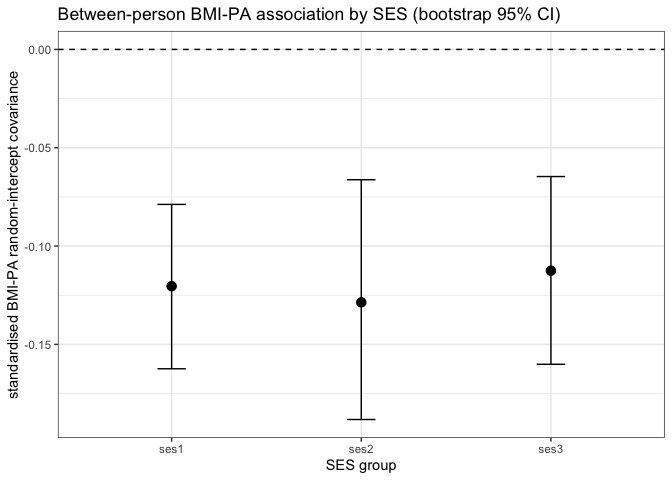

RI-CLPM analysis transcript
- 1 data
- 2 analysis steps
- 2.1 equivalised household income
- 2.2 per-wave modal income
- 2.3 above-modal income indicator
- 2.4 recode education into four levels
- 2.5 highest household education per wave
- 2.6 derive the three-level SES grouping
- 2.7 select analysis columns and describe
- 2.8 rename long-frame columns
- 2.9 physical-activity plausibility filter
- 2.10 select the analysis sample (at least 3 of waves 1 to 7)
- 2.11 reshape long to wide, one row per respondent
- 2.12 finalise SES labels and columns
- 2.13 covariate inclusion flags
- 2.14 CLPM model syntax
- 2.15 CLPM syntax with covariates
- 2.16 RI-CLPM model syntax
- 2.17 RI-CLPM syntax with covariates
- 2.18 fit pooled CLPM
- 2.19 fit grouped CLPM
- 2.20 fit grouped CLPM by SES group
- 2.21 fit grouped CLPM with covariates
- 2.22 fit grouped covariate CLPM by SES group
- 2.23 fit pooled RI-CLPM
- 2.24 fit grouped RI-CLPM
- 2.25 fit grouped RI-CLPM by SES group
- 2.26 fit grouped RI-CLPM with covariates
- 2.27 fit grouped covariate RI-CLPM by SES group
- 2.28 assemble all model fits
- 2.29 load lavaan
- 2.30 load minvariance
- 2.31 variables for measurement invariance
- 2.32 invariance levels
- 2.33 fit the configural model
- 2.34 extract invariance fit statistics
- 2.35 longitudinal invariance fit table
- 2.36 invariance parameters to compare
- 2.37 across-SES invariance of the within-person dynamics
- 2.38 name the SES invariance fits
- 2.39 across-SES invariance: fit by level and the focal structural test
- 3 result tables
- 4 measurement invariance (interpretation)
- 5 moderation test
- 6 RI-CLPM coefficients
- 7 bmi construction-audit sensitivity
- 8 session information
1 data
data_dir <- liss_data_dir()
# seed the long frame from the merged backbone.
liss <- read_liss("liss_merged_long.sav", data_dir = data_dir)
# data provenance: file times of the merged backbone and the four source
# extracts it was assembled from. on archived copies these record the copy,
# not the original construction; the authoritative pin for the frozen inputs
# is data/CHECKSUMS.txt.
sav_files <- c(
"liss_merged_long.sav", "liss_health.sav", "liss_sport.sav",
"liss_income.sav", "liss_background.sav"
)
fs::file_info(fs::path(data_dir, sav_files)) %>%
dplyr::transmute(
file = sav_files,
time_source = ifelse(is.na(birth_time), "modified", "birth"),
created = dplyr::coalesce(birth_time, modification_time),
age_days = round(as.numeric(difftime(Sys.time(), created, units = "days")))
) %>%
dplyr::arrange(created)#> # A tibble: 5 × 4
#> file time_source created age_days
#> <chr> <chr> <dttm> <dbl>
#> 1 liss_background.sav birth 2026-07-07 23:13:43 5
#> 2 liss_health.sav birth 2026-07-07 23:13:43 5
#> 3 liss_income.sav birth 2026-07-07 23:13:43 5
#> 4 liss_merged_long.sav birth 2026-07-07 23:13:43 5
#> 5 liss_sport.sav birth 2026-07-07 23:13:43 52 analysis steps
2.1 equivalised household income
liss %<>%
dplyr::mutate(
stand_inc = nethh / ((aantalhh - aantalki + 0.8 * aantalki)^0.5)
)
# cross-check: lissr's weighted_sqrt scale reproduces this equivalisation
if (requireNamespace("lissr", quietly = TRUE)) {
eq <- lissr::liss_equivalise_income(
liss$nethh, liss$aantalhh, liss$aantalki, verbose = FALSE
)
ok <- is.finite(liss$stand_inc) & is.finite(eq)
stopifnot(
isTRUE(all.equal(liss$stand_inc[ok], eq[ok])),
all(which(is.finite(liss$stand_inc) & !is.finite(eq)) %in%
which(liss$aantalhh < 1 | liss$aantalki < 0 |
(liss$aantalhh - liss$aantalki) < 1))
)
}2.2 per-wave modal income
liss %<>%
dplyr::group_by(wavenr) %>%
dplyr::mutate(
modaal_per_wave =
mean(stand_inc, na.rm = TRUE) * 0.79
) %>%
dplyr::ungroup()2.3 above-modal income indicator
liss %<>%
dplyr::mutate(
stand_inc_sqrt = sqrt(stand_inc),
boven_modaal = dplyr::case_when(
!is.na(stand_inc_sqrt) &
stand_inc_sqrt < sqrt(modaal_per_wave) ~ 0,
stand_inc_sqrt >= sqrt(modaal_per_wave) ~ 1,
TRUE ~ NA_real_
)
)2.4 recode education into four levels
liss$oplmet <- type.convert(liss$oplmet, as.is = TRUE)
liss %<>%
dplyr::mutate(
educ = dplyr::case_when(
oplmet == 1 ~ 1, # primary school
oplmet == 2 ~ 2, # vmbo (intermediate sec. edc.)
oplmet == 3 ~ 2, # havo/vwo (higher sec./preparatory uni. educ.)
oplmet == 4 ~ 3, # mbo (intermediate vocational educ.
oplmet == 5 ~ 4, # hbo (higher vocational educ.)
oplmet == 6 ~ 4, # wo (university)
oplmet == 7 ~ 1, # other
oplmet == 8 ~ 1, # not yet completed any educ.
oplmet == 9 ~ 1, # not yet started any educ.
TRUE ~ NA_real_
)
)2.5 highest household education per wave
liss %<>%
dplyr::arrange(wavenr) %>%
dplyr::group_by(nohouse_encr, wavenr) %>%
dplyr::mutate(
highest_educ_in_hh = ifelse(any(!is.na(educ)),
max(educ, na.rm = TRUE), NA_real_
)
) %>%
dplyr::ungroup()2.6 derive the three-level SES grouping
liss %<>%
dplyr::mutate(
hh_educ_3_groups = dplyr::if_else(
highest_educ_in_hh == 1, 2,
highest_educ_in_hh
) - 1,
# ses: household-maximum education in three levels; ses1 to ses3 denote
# increasing educational attainment
ses = hh_educ_3_groups
)2.7 select analysis columns and describe
liss$female <- liss$gender - 1
liss <- liss[c(
"nomem_encr",
"wavenr",
"nohouse_encr",
"female",
"ses",
"boven_modaal",
"hh_educ_3_groups",
"hhinc",
"stand_inc",
"aantalhh",
"aantalki",
"stand_inc_sqrt",
"modaal_per_wave",
"highest_educ_in_hh",
"oplmet",
"bmi",
"frve",
"sport",
"medicine",
"smoke",
"leeftijd"
)]
describe(liss, exclude = c("nomem_encr", "nohouse_encr"))| n | mean | min | max | sd | skew | kurtosis | SE | Normality | p | |
|---|---|---|---|---|---|---|---|---|---|---|
| wavenr | 65156 | 7.012 | 1.000 | 13.000 | 3.660 | -0.011 | -1.183 | 0.014 | 0.097 | <0.001 |
| female | 65156 | 0.531 | 0.000 | 1.000 | 0.499 | -0.123 | -1.985 | 0.002 | — | — |
| ses | 65156 | 2.139 | 1.000 | 3.000 | 0.852 | -0.268 | -1.570 | 0.003 | — | — |
| boven_modaal | 65156 | 0.627 | 0.000 | 1.000 | 0.484 | -0.526 | -1.723 | 0.002 | — | — |
| hh_educ_3_groups | 65156 | 2.139 | 1.000 | 3.000 | 0.852 | -0.268 | -1.570 | 0.003 | — | — |
| hhinc | 65156 | 50686.072 | 1363.000 | 483661.038 | 35058.310 | 2.121 | 10.609 | 137.345 | 0.111 | <0.001 |
| stand_inc | 65156 | 23901.532 | 626.021 | 241830.519 | 12093.308 | 1.605 | 6.624 | 47.377 | 0.094 | <0.001 |
| aantalhh | 65156 | 2.581 | 1.000 | 9.000 | 1.307 | 0.830 | 0.238 | 0.005 | 0.282 | <0.001 |
| aantalki | 65156 | 0.803 | 0.000 | 7.000 | 1.125 | 1.237 | 0.890 | 0.004 | 0.360 | <0.001 |
| stand_inc_sqrt | 65156 | 150.032 | 25.020 | 491.763 | 37.309 | 0.476 | 1.139 | 0.146 | 0.049 | <0.001 |
| modaal_per_wave | 65156 | 18882.210 | 17709.177 | 20649.212 | 867.311 | 0.447 | -0.866 | 3.398 | 0.152 | <0.001 |
| highest_educ_in_hh | 65156 | 3.093 | 1.000 | 4.000 | 0.934 | -0.521 | -0.977 | 0.004 | — | — |
| oplmet | 65156 | 3.856 | 1.000 | 9.000 | 1.604 | 0.167 | -0.540 | 0.006 | 0.157 | <0.001 |
| bmi | 65156 | 25.528 | 15.278 | 62.500 | 4.335 | 1.043 | 2.476 | 0.017 | 0.065 | <0.001 |
| frve | 65156 | 1.907 | 1.000 | 3.000 | 0.712 | 0.136 | -1.024 | 0.003 | — | — |
| sport | 65156 | 2.381 | 0.000 | 157.000 | 3.342 | 5.509 | 135.225 | 0.013 | 0.238 | <0.001 |
| medicine | 65156 | 0.908 | 0.000 | 5.000 | 1.140 | 1.200 | 0.718 | 0.004 | 0.287 | <0.001 |
| smoke | 65156 | 0.173 | 0.000 | 1.000 | 0.378 | 1.732 | 1.000 | 0.001 | — | — |
| leeftijd | 65156 | 50.753 | 16.000 | 103.000 | 17.535 | -0.170 | -0.856 | 0.069 | 0.059 | <0.001 |
| Note: Normality: Lilliefors (Kolmogorov-Smirnov) Test |
2.8 rename long-frame columns
liss %<>%
dplyr::rename(
id = nomem_encr,
t = wavenr,
pa = sport,
fv = frve,
female = female,
age = leeftijd,
med = medicine
)
describe(
liss,
exclude = c("id", "nohouse_encr"),
caption = "Descriptive statistics (pooled)"
)| n | mean | min | max | sd | skew | kurtosis | SE | Normality | p | |
|---|---|---|---|---|---|---|---|---|---|---|
| t | 65156 | 7.012 | 1.000 | 13.000 | 3.660 | -0.011 | -1.183 | 0.014 | 0.097 | <0.001 |
| female | 65156 | 0.531 | 0.000 | 1.000 | 0.499 | -0.123 | -1.985 | 0.002 | — | — |
| ses | 65156 | 2.139 | 1.000 | 3.000 | 0.852 | -0.268 | -1.570 | 0.003 | — | — |
| boven_modaal | 65156 | 0.627 | 0.000 | 1.000 | 0.484 | -0.526 | -1.723 | 0.002 | — | — |
| hh_educ_3_groups | 65156 | 2.139 | 1.000 | 3.000 | 0.852 | -0.268 | -1.570 | 0.003 | — | — |
| hhinc | 65156 | 50686.072 | 1363.000 | 483661.038 | 35058.310 | 2.121 | 10.609 | 137.345 | 0.111 | <0.001 |
| stand_inc | 65156 | 23901.532 | 626.021 | 241830.519 | 12093.308 | 1.605 | 6.624 | 47.377 | 0.094 | <0.001 |
| aantalhh | 65156 | 2.581 | 1.000 | 9.000 | 1.307 | 0.830 | 0.238 | 0.005 | 0.282 | <0.001 |
| aantalki | 65156 | 0.803 | 0.000 | 7.000 | 1.125 | 1.237 | 0.890 | 0.004 | 0.360 | <0.001 |
| stand_inc_sqrt | 65156 | 150.032 | 25.020 | 491.763 | 37.309 | 0.476 | 1.139 | 0.146 | 0.049 | <0.001 |
| modaal_per_wave | 65156 | 18882.210 | 17709.177 | 20649.212 | 867.311 | 0.447 | -0.866 | 3.398 | 0.152 | <0.001 |
| highest_educ_in_hh | 65156 | 3.093 | 1.000 | 4.000 | 0.934 | -0.521 | -0.977 | 0.004 | — | — |
| oplmet | 65156 | 3.856 | 1.000 | 9.000 | 1.604 | 0.167 | -0.540 | 0.006 | 0.157 | <0.001 |
| bmi | 65156 | 25.528 | 15.278 | 62.500 | 4.335 | 1.043 | 2.476 | 0.017 | 0.065 | <0.001 |
| fv | 65156 | 1.907 | 1.000 | 3.000 | 0.712 | 0.136 | -1.024 | 0.003 | — | — |
| pa | 65156 | 2.381 | 0.000 | 157.000 | 3.342 | 5.509 | 135.225 | 0.013 | 0.238 | <0.001 |
| med | 65156 | 0.908 | 0.000 | 5.000 | 1.140 | 1.200 | 0.718 | 0.004 | 0.287 | <0.001 |
| smoke | 65156 | 0.173 | 0.000 | 1.000 | 0.378 | 1.732 | 1.000 | 0.001 | — | — |
| age | 65156 | 50.753 | 16.000 | 103.000 | 17.535 | -0.170 | -0.856 | 0.069 | 0.059 | <0.001 |
| Note: Normality: Lilliefors (Kolmogorov-Smirnov) Test |
2.9 physical-activity plausibility filter
# set implausible sport hours to missing before the analysis subset, so the
# filter propagates to liss_subset, the wide frame and every analysis-sample
# table. bmi (observed max about 62) and fv (range 1 to 3) were verified within
# range and left unchanged. pa_ceiling is sport hours per week; values above it
# exceed any plausible general-population sport load.
pa_ceiling <- 40
liss %<>% dplyr::mutate(pa = dplyr::if_else(pa > pa_ceiling, NA_real_, pa))2.10 select the analysis sample (at least 3 of waves 1 to 7)
# retain partial respondents: keep everyone observed on at least min_waves of
# the seven analysis waves, so fiml uses all available cases under mar
analysis_waves <- 1:7
min_waves <- 3L
liss_subset <- liss %>%
dplyr::filter(t %in% analysis_waves) %>%
dplyr::group_by(id) %>%
dplyr::filter(sum(!is.na(bmi) | !is.na(fv) | !is.na(pa)) >= min_waves) %>%
dplyr::ungroup()
save(
liss_subset,
file = "liss_subset.RData"
)
describe(liss_subset,
exclude = c("id", "nohouse_encr"),
caption = "Descriptive statistics (subset)"
)| n | mean | min | max | sd | skew | kurtosis | SE | Normality | p | |
|---|---|---|---|---|---|---|---|---|---|---|
| t | 31861 | 3.990 | 1.000 | 7.000 | 1.934 | 0.015 | -1.166 | 0.011 | 0.122 | <0.001 |
| female | 31861 | 0.530 | 0.000 | 1.000 | 0.499 | -0.120 | -1.986 | 0.003 | — | — |
| ses | 31861 | 2.093 | 1.000 | 3.000 | 0.860 | -0.179 | -1.624 | 0.005 | — | — |
| boven_modaal | 31861 | 0.629 | 0.000 | 1.000 | 0.483 | -0.532 | -1.717 | 0.003 | — | — |
| hh_educ_3_groups | 31861 | 2.093 | 1.000 | 3.000 | 0.860 | -0.179 | -1.624 | 0.005 | — | — |
| hhinc | 31861 | 50081.426 | 1675.333 | 483661.038 | 35028.496 | 2.546 | 15.944 | 196.242 | 0.109 | <0.001 |
| stand_inc | 31861 | 23036.464 | 1721.326 | 241830.519 | 11614.880 | 1.767 | 9.332 | 65.071 | 0.098 | <0.001 |
| aantalhh | 31861 | 2.648 | 1.000 | 9.000 | 1.315 | 0.787 | 0.216 | 0.007 | 0.279 | <0.001 |
| aantalki | 31861 | 0.858 | 0.000 | 7.000 | 1.149 | 1.154 | 0.744 | 0.006 | 0.348 | <0.001 |
| stand_inc_sqrt | 31861 | 147.363 | 41.489 | 491.763 | 36.341 | 0.502 | 1.425 | 0.204 | 0.052 | <0.001 |
| modaal_per_wave | 31861 | 18173.881 | 17709.177 | 18831.080 | 340.048 | 0.510 | -0.536 | 1.905 | 0.141 | <0.001 |
| highest_educ_in_hh | 31861 | 3.041 | 1.000 | 4.000 | 0.950 | -0.445 | -1.057 | 0.005 | — | — |
| oplmet | 31861 | 3.766 | 1.000 | 9.000 | 1.618 | 0.256 | -0.531 | 0.009 | 0.171 | <0.001 |
| bmi | 31861 | 25.467 | 15.278 | 58.594 | 4.325 | 1.049 | 2.379 | 0.024 | 0.067 | <0.001 |
| fv | 31861 | 1.890 | 1.000 | 3.000 | 0.701 | 0.155 | -0.967 | 0.004 | — | — |
| pa | 31855 | 2.055 | 0.000 | 40.000 | 3.036 | 3.013 | 17.652 | 0.017 | 0.249 | <0.001 |
| med | 31861 | 0.869 | 0.000 | 5.000 | 1.118 | 1.265 | 0.942 | 0.006 | 0.295 | <0.001 |
| smoke | 31861 | 0.200 | 0.000 | 1.000 | 0.400 | 1.498 | 0.243 | 0.002 | — | — |
| age | 31861 | 49.527 | 16.000 | 97.000 | 16.799 | -0.135 | -0.786 | 0.094 | 0.055 | <0.001 |
| Note: Normality: Lilliefors (Kolmogorov-Smirnov) Test |
# weasel cross-check and selection audit: the same rule as an explicit,
# named scenario (observed = at least one focal measure at a wave)
presence <- liss %>%
dplyr::filter(
t %in% analysis_waves,
!is.na(bmi) | !is.na(fv) | !is.na(pa)
)
ws_plan <- weasel::weasel_plan(
presence[c("id", "t", "female", "age", "bmi", "fv", "pa", "ses")],
id = "id", wave = "t", span = "full",
scenarios = data.frame(
scenario = "min3_of7",
require_endpoints = FALSE,
max_missing = length(analysis_waves) - min_waves,
n_gap_max = 5L,
max_gap_len = 5L
)
)#> ✔ plan ready: span 1:7 (full, L = 7)stopifnot(setequal(
unique(weasel::weasel_apply(ws_plan, "min3_of7")$id),
unique(liss_subset$id)
))
weasel::weasel_print_table(
weasel::weasel_sensitivity(
ws_plan,
require_endpoints = FALSE, max_missing = 0:6,
n_gap_max = 5L, max_gap_len = 5L
),
title = "sample size by minimum-wave tolerance"
)#> ── sample size by minimum-wave tolerance ─────────────────────────────────────────────────────────────────────────────────────────────────────────────────────────────────────
#> require_endpoints max_missing n_gap_max max_gap_len n_ids prop_ids
#> FALSE 0 5 5 2396 0.330
#> FALSE 1 5 5 3250 0.448
#> FALSE 2 5 5 4222 0.582
#> FALSE 3 5 5 4965 0.685
#> FALSE 4 5 5 5676 0.783
#> FALSE 5 5 5 7097 0.979
#> FALSE 6 5 5 7250 1.000
#> mean_prop_present
#> 1.000
#> 0.962
#> 0.905
#> 0.855
#> 0.802
#> 0.699
#> 0.687weasel::weasel_print_table(
weasel::weasel_selectivity(ws_plan, "min3_of7"),
title = "retained vs excluded respondents"
)#> ── retained vs excluded respondents ──────────────────────────────────────────────────────────────────────────────────────────────────────────────────────────────────────────
#> variable n_retained n_excluded mean_retained mean_excluded diff smd
#> age 5676 1574 46.208 42.358 3.850 0.217
#> bmi 5676 1574 25.124 24.580 0.544 0.132
#> ses 5676 1574 2.070 2.128 -0.057 -0.068
#> fv 5676 1574 1.904 1.859 0.045 0.064
#> female 5676 1574 0.532 0.539 -0.007 -0.014
#> pa 5675 1572 2.249 2.283 -0.034 -0.011cat(weasel::weasel_justify_subset(ws_plan, "min3_of7"), "\n")#> To construct a longitudinal analysis sample, we selected respondents whose wave participation satisfied explicit structural criteria using the WEASEL framework (Wave-based Extraction and Selection for Longitudinal Data) (R package weasel). Specifically, we focused on waves 1 to 7 (L = 7) and did not require observed endpoints, allowing unanchored participation, allowed up to 4 missing waves within the window, and restricted the missingness structure (at most 5 interior missing block(s), each no longer than 5 wave(s)). This strategy retained 5676 respondent(s), reflecting an explicit trade-off between sample size and within-window completeness. The planning population comprised 7250 respondent(s) observed at least once within the analysis window, out of 7250 distinct respondent(s) in the supplied data; retention figures are relative to this in-window population. In the resulting subset, mean within-window coverage was 0.802, endpoint coverage was 0.508. The analysis window was selected using the package's span rule (full), which prioritizes a coherent window with comparatively strong participation. All selection decisions were rule-based and reproducible, and can be regenerated from the same inputs and parameters using the weasel workflow.2.11 reshape long to wide, one row per respondent
transform_to_wide <- function(long_data) {
wide_data <- long_data %>%
dplyr::rename(
id = id,
w = t,
BMI = bmi,
FV = fv,
PA = pa
) %>%
transform(w = w - min(w) + 1)
time_invariant <- which(names(wide_data) %in%
c(
"id", "w", "age", "med", "female", "ses",
"hhedu3", "hhedu", "modaal", "hhinc3", "hhinc"
))
df1 <- wide_data[time_invariant] %>%
dplyr::group_by(id) %>%
dplyr::slice_min(order_by = w, n = 1) %>%
dplyr::ungroup() %>%
dplyr::select(-w)
df2 <- wide_data[-time_invariant[-c(1:2)]]
df2 <- stats::reshape(
data = df2,
idvar = "id",
timevar = "w",
direction = "wide",
sep = "",
)
df2 <- df2[order(
as.numeric(gsub("\\D", "", names(df2))),
na.last = FALSE
)]
dplyr::full_join(df1, df2, by = "id")
}
cols_to_keep <- c(
"id", "t", "ses", "bmi", "age",
"fv", "pa", "med", "female"
)
wide <- liss_subset_wide <- transform_to_wide(liss_subset[, cols_to_keep])
save(liss_subset_wide, file = "liss_subset_wide.RData")
describe(liss_subset_wide,
exclude = "id",
caption = "Descriptive statistics (wide subset)"
)| n | mean | min | max | sd | skew | kurtosis | SE | Normality | p | |
|---|---|---|---|---|---|---|---|---|---|---|
| ses | 5676 | 2.070 | 1.000 | 3.000 | 0.860 | -0.135 | -1.636 | 0.011 | — | — |
| age | 5676 | 46.208 | 16.000 | 94.000 | 17.079 | -0.049 | -0.858 | 0.227 | 0.053 | <0.001 |
| med | 5676 | 0.750 | 0.000 | 5.000 | 1.032 | 1.428 | 1.541 | 0.014 | 0.320 | <0.001 |
| female | 5676 | 0.532 | 0.000 | 1.000 | 0.499 | -0.129 | -1.984 | 0.007 | — | — |
| BMI1 | 4107 | 25.245 | 15.561 | 54.687 | 4.299 | 1.070 | 2.300 | 0.067 | 0.072 | <0.001 |
| FV1 | 4107 | 1.910 | 1.000 | 3.000 | 0.699 | 0.125 | -0.954 | 0.011 | — | — |
| PA1 | 4106 | 2.249 | 0.000 | 30.000 | 3.034 | 2.663 | 12.786 | 0.047 | 0.229 | <0.001 |
| BMI2 | 4434 | 25.329 | 15.717 | 57.031 | 4.312 | 1.042 | 2.309 | 0.065 | 0.065 | <0.001 |
| FV2 | 4434 | 1.890 | 1.000 | 3.000 | 0.703 | 0.157 | -0.975 | 0.011 | — | — |
| PA2 | 4433 | 2.077 | 0.000 | 40.000 | 3.089 | 3.572 | 25.790 | 0.046 | 0.251 | <0.001 |
| BMI3 | 5035 | 25.452 | 15.347 | 56.641 | 4.307 | 1.047 | 2.344 | 0.061 | 0.067 | <0.001 |
| FV3 | 5035 | 1.900 | 1.000 | 3.000 | 0.706 | 0.144 | -0.995 | 0.010 | — | — |
| PA3 | 5033 | 2.112 | 0.000 | 40.000 | 3.020 | 2.835 | 15.431 | 0.043 | 0.242 | <0.001 |
| BMI4 | 5049 | 25.533 | 15.625 | 58.594 | 4.378 | 1.067 | 2.482 | 0.062 | 0.069 | <0.001 |
| FV4 | 5049 | 1.871 | 1.000 | 3.000 | 0.703 | 0.186 | -0.977 | 0.010 | — | — |
| PA4 | 5048 | 2.110 | 0.000 | 40.000 | 3.193 | 3.268 | 20.833 | 0.045 | 0.254 | <0.001 |
| BMI5 | 4687 | 25.526 | 15.278 | 54.687 | 4.328 | 1.040 | 2.392 | 0.063 | 0.071 | <0.001 |
| FV5 | 4687 | 1.879 | 1.000 | 3.000 | 0.703 | 0.173 | -0.979 | 0.010 | — | — |
| PA5 | 4686 | 1.969 | 0.000 | 40.000 | 3.085 | 3.167 | 18.940 | 0.045 | 0.262 | <0.001 |
| BMI6 | 4431 | 25.570 | 15.278 | 54.687 | 4.361 | 1.075 | 2.565 | 0.066 | 0.066 | <0.001 |
| FV6 | 4431 | 1.880 | 1.000 | 3.000 | 0.695 | 0.166 | -0.933 | 0.010 | — | — |
| PA6 | 4431 | 1.917 | 0.000 | 26.000 | 2.865 | 2.502 | 9.729 | 0.043 | 0.254 | <0.001 |
| BMI7 | 4118 | 25.599 | 15.278 | 54.687 | 4.267 | 0.996 | 2.213 | 0.066 | 0.068 | <0.001 |
| FV7 | 4118 | 1.908 | 1.000 | 3.000 | 0.696 | 0.126 | -0.940 | 0.011 | — | — |
| PA7 | 4118 | 1.949 | 0.000 | 40.000 | 2.913 | 2.803 | 15.156 | 0.045 | 0.252 | <0.001 |
| Note: Normality: Lilliefors (Kolmogorov-Smirnov) Test |
2.12 finalise SES labels and columns
wide$ses <- paste0("ses", wide$ses)
wide <- wide[, grep(paste0(cols_to_keep, collapse = "|"),
names(wide),
ignore.case = TRUE, value = TRUE
)]2.13 covariate inclusion flags
# Covariate Specification
female <- TRUE
med <- TRUE
age <- TRUE2.14 CLPM model syntax
clpm_syntax <- "
# Estimate the lagged effects between the observed variables.
FV2 ~ FV1 + BMI1 + PA1
BMI2 ~ FV1 + BMI1 + PA1
PA2 ~ FV1 + BMI1 + PA1
FV3 ~ FV2 + BMI2 + PA2
BMI3 ~ FV2 + BMI2 + PA2
PA3 ~ FV2 + BMI2 + PA2
FV4 ~ FV3 + BMI3 + PA3
BMI4 ~ FV3 + BMI3 + PA3
PA4 ~ FV3 + BMI3 + PA3
FV5 ~ FV4 + BMI4 + PA4
BMI5 ~ FV4 + BMI4 + PA4
PA5 ~ FV4 + BMI4 + PA4
FV6 ~ FV5 + BMI5 + PA5
BMI6 ~ FV5 + BMI5 + PA5
PA6 ~ FV5 + BMI5 + PA5
FV7 ~ FV6 + BMI6 + PA6
BMI7 ~ FV6 + BMI6 + PA6
PA7 ~ FV6 + BMI6 + PA6
# Estimate the covariance between the observed variables at the first wave.
## Covariance
FV1 ~~ BMI1
FV1 ~~ PA1
BMI1 ~~ PA1
# Estimate the covariances between the residuals of the observed variables.
FV2 ~~ BMI2
FV2 ~~ PA2
BMI2 ~~ PA2
FV3 ~~ BMI3
FV3 ~~ PA3
BMI3 ~~ PA3
FV4 ~~ BMI4
FV4 ~~ PA4
BMI4 ~~ PA4
FV5 ~~ BMI5
FV5 ~~ PA5
BMI5 ~~ PA5
FV6 ~~ BMI6
FV6 ~~ PA6
BMI6 ~~ PA6
FV7 ~~ BMI7
FV7 ~~ PA7
BMI7 ~~ PA7
# Estimate the (residual) variance of the observed variables.
FV1 ~~ FV1 # Variances
BMI1 ~~ BMI1
PA1 ~~ PA1
## Residual variances
FV2 ~~ FV2
BMI2 ~~ BMI2
PA2 ~~ PA2
FV3 ~~ FV3
BMI3 ~~ BMI3
PA3 ~~ PA3
FV4 ~~ FV4
BMI4 ~~ BMI4
PA4 ~~ PA4
FV5 ~~ FV5
BMI5 ~~ BMI5
PA5 ~~ PA5
FV6 ~~ FV6
BMI6 ~~ BMI6
PA6 ~~ PA6
FV7 ~~ FV7
BMI7 ~~ BMI7
PA7 ~~ PA7
"2.15 CLPM syntax with covariates
comment <- "
# Specify regressions of covariates on variables at time 1."
female_syntax <- "
BMI1 ~ female
PA1 ~ female
FV1 ~ female
"
med_syntax <- "
BMI1 ~ med
PA1 ~ med
FV1 ~ med
"
age_syntax <- "
BMI1 ~ age
PA1 ~ age
FV1 ~ age
"
female_syntax %<>% ifelse(test = female, "")
med_syntax %<>% ifelse(test = med, "")
age_syntax %<>% ifelse(test = age, "")
clpm_covar_syntax <- paste0(
clpm_syntax,
comment,
female_syntax,
med_syntax,
age_syntax,
collapse = "\n"
)2.16 RI-CLPM model syntax
ri_clpm_syntax <- "
# between components (random intercepts)
riBMI =~ 1*BMI1 + 1*BMI2 + 1*BMI3 + 1*BMI4 + 1*BMI5 + 1*BMI6 + 1*BMI7
riPA =~ 1*PA1 + 1*PA2 + 1*PA3 + 1*PA4 + 1*PA5 + 1*PA6 + 1*PA7
riFV =~ 1*FV1 + 1*FV2 + 1*FV3 + 1*FV4 + 1*FV5 + 1*FV6 + 1*FV7
# within-person components
wBMI1 =~ 1*BMI1
wPA1 =~ 1*PA1
wFV1 =~ 1*FV1
wBMI2 =~ 1*BMI2
wPA2 =~ 1*PA2
wFV2 =~ 1*FV2
wBMI3 =~ 1*BMI3
wPA3 =~ 1*PA3
wFV3 =~ 1*FV3
wBMI4 =~ 1*BMI4
wPA4 =~ 1*PA4
wFV4 =~ 1*FV4
wBMI5 =~ 1*BMI5
wPA5 =~ 1*PA5
wFV5 =~ 1*FV5
wBMI6 =~ 1*BMI6
wPA6 =~ 1*PA6
wFV6 =~ 1*FV6
wBMI7 =~ 1*BMI7
wPA7 =~ 1*PA7
wFV7 =~ 1*FV7
# autoregressive and cross-lagged effects among within components
# each component is regressed on all three components at the preceding wave
wBMI2 + wPA2 + wFV2 ~ wBMI1 + wPA1 + wFV1
wBMI3 + wPA3 + wFV3 ~ wBMI2 + wPA2 + wFV2
wBMI4 + wPA4 + wFV4 ~ wBMI3 + wPA3 + wFV3
wBMI5 + wPA5 + wFV5 ~ wBMI4 + wPA4 + wFV4
wBMI6 + wPA6 + wFV6 ~ wBMI5 + wPA5 + wFV5
wBMI7 + wPA7 + wFV7 ~ wBMI6 + wPA6 + wFV6
# within covariances at wave 1 (freed)
wBMI1 ~~ wPA1
wBMI1 ~~ wFV1
wPA1 ~~ wFV1
# within residual covariances, waves 2 to 7
wBMI2 ~~ wPA2
wBMI2 ~~ wFV2
wPA2 ~~ wFV2
wBMI3 ~~ wPA3
wBMI3 ~~ wFV3
wPA3 ~~ wFV3
wBMI4 ~~ wPA4
wBMI4 ~~ wFV4
wPA4 ~~ wFV4
wBMI5 ~~ wPA5
wBMI5 ~~ wFV5
wPA5 ~~ wFV5
wBMI6 ~~ wPA6
wBMI6 ~~ wFV6
wPA6 ~~ wFV6
wBMI7 ~~ wPA7
wBMI7 ~~ wFV7
wPA7 ~~ wFV7
# random intercept variances and covariances
riBMI ~~ riBMI
riPA ~~ riPA
riFV ~~ riFV
riBMI ~~ riPA
riBMI ~~ riFV
riPA ~~ riFV
# within variances at wave 1 and residual variances, waves 2 to 7
wBMI1 ~~ wBMI1
wPA1 ~~ wPA1
wFV1 ~~ wFV1
wBMI2 ~~ wBMI2
wPA2 ~~ wPA2
wFV2 ~~ wFV2
wBMI3 ~~ wBMI3
wPA3 ~~ wPA3
wFV3 ~~ wFV3
wBMI4 ~~ wBMI4
wPA4 ~~ wPA4
wFV4 ~~ wFV4
wBMI5 ~~ wBMI5
wPA5 ~~ wPA5
wFV5 ~~ wFV5
wBMI6 ~~ wBMI6
wPA6 ~~ wPA6
wFV6 ~~ wFV6
wBMI7 ~~ wBMI7
wPA7 ~~ wPA7
wFV7 ~~ wFV7
# observed residual variances fixed to zero, routing all variance to the
# random intercepts and within components
BMI1 ~~ 0*BMI1
PA1 ~~ 0*PA1
FV1 ~~ 0*FV1
BMI2 ~~ 0*BMI2
PA2 ~~ 0*PA2
FV2 ~~ 0*FV2
BMI3 ~~ 0*BMI3
PA3 ~~ 0*PA3
FV3 ~~ 0*FV3
BMI4 ~~ 0*BMI4
PA4 ~~ 0*PA4
FV4 ~~ 0*FV4
BMI5 ~~ 0*BMI5
PA5 ~~ 0*PA5
FV5 ~~ 0*FV5
BMI6 ~~ 0*BMI6
PA6 ~~ 0*PA6
FV6 ~~ 0*FV6
BMI7 ~~ 0*BMI7
PA7 ~~ 0*PA7
FV7 ~~ 0*FV7
"2.17 RI-CLPM syntax with covariates
comment <- paste0(
"# Regressions of covariates female and ",
"medication use at t1 on random intercepts."
)
female_syntax <- "
riBMI ~ female
riPA ~ female
riFV ~ female
"
med_syntax <- "
riBMI ~ med
riPA ~ med
riFV ~ med
"
age_syntax <- "
riPA ~ age
riFV ~ age
riBMI ~ age
"
female_syntax %<>% ifelse(test = female, "")
med_syntax %<>% ifelse(test = med, "")
age_syntax %<>% ifelse(test = age, "")
ri_clpm_covar_syntax <- paste0(
ri_clpm_syntax,
comment,
female_syntax,
med_syntax,
age_syntax,
collapse = "\n"
)2.18 fit pooled CLPM
(clpm_pooled_fit <-
lavaan::lavaan(
# Model specification
model = clpm_syntax,
fixed.x = FALSE,
data = wide,
int.ov.free = TRUE,
meanstructure = TRUE,
# Method specification
estimator = "MLR",
se = "robust",
missing = "fiml"
))#> lavaan 0.6-21 ended normally after 219 iterations
#>
#> Estimator ML
#> Optimization method NLMINB
#> Number of model parameters 117
#>
#> Number of observations 5676
#> Number of missing patterns 98
#>
#> Model Test User Model:
#> Standard Scaled
#> Test Statistic 7196.849 4384.851
#> Degrees of freedom 135 135
#> P-value (Chi-square) 0.000 0.000
#> Scaling correction factor 1.641
#> Yuan-Bentler correction (Mplus variant)2.19 fit grouped CLPM
(clpm_grouped_fit <-
lavaan::lavaan(
# Model specification
model = clpm_syntax,
fixed.x = FALSE,
data = wide,
group = "ses",
group.label = c("ses1", "ses2", "ses3"),
int.ov.free = TRUE,
meanstructure = TRUE,
# Method specification
estimator = "MLR",
se = "robust",
missing = "fiml"
))#> lavaan 0.6-21 ended normally after 454 iterations
#>
#> Estimator ML
#> Optimization method NLMINB
#> Number of model parameters 351
#>
#> Number of observations per group:
#> ses1 1914
#> ses2 1449
#> ses3 2313
#> Number of missing patterns per group:
#> ses1 76
#> ses2 79
#> ses3 86
#>
#> Model Test User Model:
#> Standard Scaled
#> Test Statistic 7678.495 5107.579
#> Degrees of freedom 405 405
#> P-value (Chi-square) 0.000 0.000
#> Scaling correction factor 1.503
#> Yuan-Bentler correction (Mplus variant)
#> Test statistic for each group:
#> ses1 1950.878 1950.878
#> ses2 1129.024 1129.024
#> ses3 2027.678 2027.6782.20 fit grouped CLPM by SES group
# by group
clpm_grouped_fit.g <-
sapply(c("ses1", "ses2", "ses3"), function(g) {
lavaan::lavaan(
# Model specification
model = clpm_syntax,
fixed.x = FALSE,
data = dplyr::filter(wide, ses == g),
int.ov.free = TRUE,
meanstructure = TRUE,
# Method specification
estimator = "MLR",
se = "robust",
missing = "fiml"
)
})2.21 fit grouped CLPM with covariates
(clpm_grouped_covar_fit <-
lavaan::lavaan(
# Model specification
model = clpm_covar_syntax,
fixed.x = TRUE,
data = wide,
group = "ses",
group.label = c("ses1", "ses2", "ses3"),
int.ov.free = TRUE,
meanstructure = TRUE,
# Method specification
estimator = "MLR",
se = "robust",
missing = "fiml"
))#> lavaan 0.6-21 ended normally after 486 iterations
#>
#> Estimator ML
#> Optimization method NLMINB
#> Number of model parameters 378
#>
#> Number of observations per group:
#> ses1 1914
#> ses2 1449
#> ses3 2313
#> Number of missing patterns per group:
#> ses1 76
#> ses2 79
#> ses3 86
#>
#> Model Test User Model:
#> Standard Scaled
#> Test Statistic 8346.820 6112.699
#> Degrees of freedom 567 567
#> P-value (Chi-square) 0.000 0.000
#> Scaling correction factor 1.365
#> Yuan-Bentler correction (Mplus variant)
#> Test statistic for each group:
#> ses1 2341.297 2341.297
#> ses2 1380.610 1380.610
#> ses3 2390.793 2390.7932.22 fit grouped covariate CLPM by SES group
# by group
clpm_grouped_covar_fit.g <-
sapply(c("ses1", "ses2", "ses3"), function(g) {
lavaan::lavaan(
# Model specification
model = clpm_covar_syntax,
fixed.x = TRUE,
data = dplyr::filter(wide, ses == g),
int.ov.free = TRUE,
meanstructure = TRUE,
# Method specification
estimator = "MLR",
se = "robust",
missing = "fiml"
)
})2.23 fit pooled RI-CLPM
(ri_clpm_pooled_fit <-
lavaan::lavaan(
# Model specification
model = ri_clpm_syntax,
fixed.x = FALSE,
data = wide,
int.ov.free = TRUE,
meanstructure = TRUE,
# Method specification
estimator = "MLR",
se = "robust",
missing = "fiml"
))#> lavaan 0.6-21 ended normally after 338 iterations
#>
#> Estimator ML
#> Optimization method NLMINB
#> Number of model parameters 123
#>
#> Number of observations 5676
#> Number of missing patterns 98
#>
#> Model Test User Model:
#> Standard Scaled
#> Test Statistic 761.988 506.739
#> Degrees of freedom 129 129
#> P-value (Chi-square) 0.000 0.000
#> Scaling correction factor 1.504
#> Yuan-Bentler correction (Mplus variant)2.24 fit grouped RI-CLPM
(ri_clpm_grouped_fit <-
lavaan::lavaan(
# Model specification
model = ri_clpm_syntax,
fixed.x = FALSE,
data = wide,
group = "ses",
group.label = c("ses1", "ses2", "ses3"),
int.ov.free = TRUE,
meanstructure = TRUE,
# Method specification
estimator = "MLR",
se = "robust",
missing = "fiml"
))#> lavaan 0.6-21 ended normally after 507 iterations
#>
#> Estimator ML
#> Optimization method NLMINB
#> Number of model parameters 369
#>
#> Number of observations per group:
#> ses1 1914
#> ses2 1449
#> ses3 2313
#> Number of missing patterns per group:
#> ses1 76
#> ses2 79
#> ses3 86
#>
#> Model Test User Model:
#> Standard Scaled
#> Test Statistic 1160.185 837.190
#> Degrees of freedom 387 387
#> P-value (Chi-square) 0.000 0.000
#> Scaling correction factor 1.386
#> Yuan-Bentler correction (Mplus variant)
#> Test statistic for each group:
#> ses1 311.842 311.842
#> ses2 244.664 244.664
#> ses3 280.684 280.6842.25 fit grouped RI-CLPM by SES group
# by group
ri_clpm_grouped_fit.g <-
sapply(c("ses1", "ses2", "ses3"), function(g) {
lavaan::lavaan(
# Model specification
model = ri_clpm_syntax,
fixed.x = FALSE,
data = dplyr::filter(wide, ses == g),
int.ov.free = TRUE,
meanstructure = TRUE,
# Method specification
estimator = "MLR",
se = "robust",
missing = "fiml"
)
})2.26 fit grouped RI-CLPM with covariates
(ri_clpm_grouped_covar_fit <-
lavaan::lavaan(
# Model specification
model = ri_clpm_covar_syntax,
fixed.x = TRUE,
data = wide,
group = "ses",
group.label = c("ses1", "ses2", "ses3"),
int.ov.free = TRUE,
meanstructure = TRUE,
# Method specification
estimator = "MLR",
se = "robust",
missing = "fiml"
))#> lavaan 0.6-21 ended normally after 546 iterations
#>
#> Estimator ML
#> Optimization method NLMINB
#> Number of model parameters 396
#>
#> Number of observations per group:
#> ses1 1914
#> ses2 1449
#> ses3 2313
#> Number of missing patterns per group:
#> ses1 76
#> ses2 79
#> ses3 86
#>
#> Model Test User Model:
#> Standard Scaled
#> Test Statistic 1673.160 1308.991
#> Degrees of freedom 549 549
#> P-value (Chi-square) 0.000 0.000
#> Scaling correction factor 1.278
#> Yuan-Bentler correction (Mplus variant)
#> Test statistic for each group:
#> ses1 474.439 474.439
#> ses2 376.725 376.725
#> ses3 457.827 457.8272.27 fit grouped covariate RI-CLPM by SES group
ri_clpm_grouped_covar_fit.g <-
sapply(c("ses1", "ses2", "ses3"), function(g) {
lavaan::lavaan(
# Model specification
model = ri_clpm_covar_syntax,
fixed.x = TRUE,
data = dplyr::filter(wide, ses == g),
int.ov.free = TRUE,
meanstructure = TRUE,
# Method specification
estimator = "MLR",
se = "robust",
missing = "fiml"
)
})2.28 assemble all model fits
all_model_fits <- list(
pooled = list(
clpm_pooled_fit = clpm_pooled_fit,
ri_clpm_pooled_fit = ri_clpm_pooled_fit
),
grouped = list(
clpm_grouped_fit = clpm_grouped_fit,
clpm_grouped_covar_fit = clpm_grouped_covar_fit,
ri_clpm_grouped_fit = ri_clpm_grouped_fit,
ri_clpm_grouped_covar_fit = ri_clpm_grouped_covar_fit
),
subgrouped = list(
clpm_grouped_fit.g = clpm_grouped_fit.g,
clpm_grouped_covar_fit.g = clpm_grouped_covar_fit.g,
ri_clpm_grouped_fit.g = ri_clpm_grouped_fit.g,
ri_clpm_grouped_covar_fit.g = ri_clpm_grouped_covar_fit.g
)
)
all_model_syntax <- named_list(
clpm_syntax,
clpm_covar_syntax,
ri_clpm_syntax,
ri_clpm_covar_syntax
)
save(all_model_syntax, file = "all_model_syntax.RData")
rds_file_name <- paste0(
"all_model_fits_",
gsub("[-.: ]", "_", Sys.time()), ".Rds"
)2.29 load lavaan
library(lavaan)#> This is lavaan 0.6-21
#> lavaan is FREE software! Please report any bugs.2.30 load minvariance
library(minvariance)
library(stringr)
library(dplyr)#>
#> Attaching package: 'dplyr'
#> The following objects are masked from 'package:stats':
#>
#> filter, lag
#> The following objects are masked from 'package:base':
#>
#> intersect, setdiff, setequal, union2.31 variables for measurement invariance
var_list <- list(
BMI = c("BMI1", "BMI2", "BMI3", "BMI4", "BMI5", "BMI6", "BMI7"),
PA = c("PA1", "PA2", "PA3", "PA4", "PA5", "PA6", "PA7"),
FV = c("FV1", "FV2", "FV3", "FV4", "FV5", "FV6", "FV7")
)2.32 invariance levels
model_types <- c("configural", "weak", "strong", "strict")
purrr::iwalk(model_types, ~ {
assign(paste0(.x, "_syntax"),
minvariance::long_minvariance_syntax(var_list, model = .x),
envir = .GlobalEnv
)
})#> Configural Invariance Model (Pattern Invariance)
#> Weak Invariance Model (Metric Invariance, Loading Invariance)
#> Strong Invariance Model (Scalar Invariance, Intercept Invariance)
#> Strict Invariance Model (Error Variance Invariance, Residual Invariance)2.33 fit the configural model
configural_model <- cfa(configural_syntax, data = wide,
estimator = "MLR", se = "robust", missing = "fiml",
fixed.x = FALSE)
weak_model <- cfa(weak_syntax, data = wide,
estimator = "MLR", se = "robust", missing = "fiml",
fixed.x = FALSE)
strong_model <- cfa(strong_syntax, data = wide,
estimator = "MLR", se = "robust", missing = "fiml",
fixed.x = FALSE)
strict_model <- cfa(strict_syntax, data = wide,
estimator = "MLR", se = "robust", missing = "fiml",
fixed.x = FALSE)#> Warning: lavaan->lav_object_post_check():
#> some estimated lv variances are negative2.34 extract invariance fit statistics
fit_stats <- extract_fit(
configural_model,
weak_model,
strong_model,
strict_model
) %>%
mutate(model = dplyr::case_when(
model == 1 ~ "configural",
model == 2 ~ "weak",
model == 3 ~ "strong",
model == 4 ~ "strict"
))2.35 longitudinal invariance fit table
# extract_fit reports npar but not model df, and its chisq column is the
# standard (unscaled) statistic; add df and the scaled chi-square so the table
# is self-documenting and matches what the article reports
fit_stats$df <- vapply(
list(configural_model, weak_model, strong_model, strict_model),
function(m) unname(lavaan::fitMeasures(m, "df")), numeric(1)
)
fit_stats$chisq_scaled <- vapply(
list(configural_model, weak_model, strong_model, strict_model),
function(m) unname(lavaan::fitMeasures(m, "chisq.scaled")), numeric(1)
)
fit_stats %>%
mutate(across(where(is.double), ~ round(.x, 3))) %>%
as.data.frame() %>%
knitr::kable(format = "markdown", digits = 3, align = "l")| model | chisq | npar | aic | bic | cfi | rmsea | srmr | tli | converged | df | chisq_scaled |
|---|---|---|---|---|---|---|---|---|---|---|---|
| configural | 5201.109 | 87 | 322243.8 | 322821.8 | 0.947 | 0.073 | 0.025 | 0.933 | TRUE | 165 | 3284.129 |
| weak | 5658.557 | 75 | 322677.3 | 323175.6 | 0.943 | 0.074 | 0.040 | 0.932 | TRUE | 177 | 3361.206 |
| strong | 5868.491 | 63 | 322863.2 | 323281.8 | 0.940 | 0.073 | 0.045 | 0.934 | TRUE | 189 | 3521.518 |
| strict | 52364.661 | 49 | 369331.4 | 369656.9 | 0.453 | 0.213 | 0.606 | 0.435 | TRUE | 203 | 37115.806 |
2.36 invariance parameters to compare
model_parameters <- c(
"loadings",
"regressions",
"residuals",
"residual.covariances"
)
# under the ri-clpm parameterisation the loadings are fixed (metric equality
# is automatic) and the observed residual variances and covariances are fixed
# to zero, so "strict" and "residual" levels would constrain nothing; the one
# real constraint beyond the configural model is the structural level with the
# regressions held equal across groups
ses_models <- list(
config = NULL,
equal_regressions = model_parameters[1:2]
)2.37 across-SES invariance of the within-person dynamics
# within-wave residual covariances, freed across groups (the error structure is
# not the target of the cross-group test).
covariances_of_residuals <-
c(
"wBMI2 ~~ wPA2",
"wBMI2 ~~ wFV2",
"wPA2 ~~ wFV2",
"wBMI3 ~~ wPA3",
"wBMI3 ~~ wFV3",
"wPA3 ~~ wFV3",
"wBMI4 ~~ wPA4",
"wBMI4 ~~ wFV4",
"wPA4 ~~ wFV4",
"wBMI5 ~~ wPA5",
"wBMI5 ~~ wFV5",
"wPA5 ~~ wFV5",
"wBMI6 ~~ wPA6",
"wBMI6 ~~ wFV6",
"wPA6 ~~ wFV6",
"wBMI7 ~~ wPA7",
"wBMI7 ~~ wFV7",
"wPA7 ~~ wFV7"
)
# fit the invariance models on the within-person dynamics only (no covariates):
# covariates predict the random intercepts but are not part of the dynamics, and
# the constrained covariate model fails to converge under FIML.
fit <- lapply(names(ses_models), function(i) {
.fit <- lavaan::lavaan(
model = ri_clpm_syntax,
fixed.x = FALSE,
data = wide,
group = "ses",
group.label = c("ses1", "ses2", "ses3"),
int.ov.free = TRUE,
meanstructure = TRUE,
check.start = TRUE,
group.equal = ses_models[[i]],
group.partial = covariances_of_residuals,
estimator = "MLR",
se = "robust",
missing = "fiml"
)
cli::cli_progress_step(i)
return(.fit)
})#> ℹ config[K✔ config [4ms][K
#> ℹ equal_regressions[K✔ equal_regressions [5ms][K2.38 name the SES invariance fits
names(fit) <- names(ses_models)2.39 across-SES invariance: fit by level and the focal structural test
# robust fit at each constraint level. levels: config (nothing equal) and
# equal_regressions (loadings + regressions; the loadings are fixed anyway, so
# the regressions carry the constraint). built from base lavaan::fitMeasures
# to sidestep the semTools/lavaan version skew.
ses_inv_fit <- as.data.frame(t(sapply(
fit[c("config", "equal_regressions")],
function(m) {
lavaan::fitMeasures(m, c(
"npar", "chisq.scaled", "df.scaled",
"cfi.robust", "tli.robust", "rmsea.robust", "srmr", "aic", "bic"
))
}
)))
ses_inv_fit <- cbind(level = rownames(ses_inv_fit), ses_inv_fit)
knitr::kable(
ses_inv_fit, row.names = FALSE, digits = 3,
caption = "across-SES invariance of the within-person dynamics: robust fit by level"
)| level | npar | chisq.scaled | df.scaled | cfi.robust | tli.robust | rmsea.robust | srmr | aic | bic |
|---|---|---|---|---|---|---|---|---|---|
| config | 369 | 837.190 | 387 | 0.993 | 0.988 | 0.035 | 0.030 | 317055.2 | 319506.9 |
| equal_regressions | 261 | 956.961 | 495 | 0.992 | 0.990 | 0.033 | 0.031 | 317116.7 | 318850.8 |
across-SES invariance of the within-person dynamics: robust fit by level
# focal cross-group structural test: can the within-person regression paths be
# held equal across SES (configural vs equal regressions; metric is automatic).
ses_struct_lrt <- lavaan::lavTestLRT(
fit$config, fit$equal_regressions,
method = "satorra.2000",
model.names = c("configural", "equal regressions")
)
knitr::kable(
cbind(model = rownames(ses_struct_lrt), as.data.frame(ses_struct_lrt)),
row.names = FALSE, digits = 3,
caption = "within-person regressions free vs equal across SES (scaled LRT)"
)| model | Df | AIC | BIC | Chisq | Chisq diff | Df diff | Pr(>Chisq) |
|---|---|---|---|---|---|---|---|
| configural | 387 | 317055.2 | 319506.9 | 1160.185 | — | — | — |
| equal regressions | 495 | 317116.7 | 318850.8 | 1437.630 | 95.368 | 108 | 0.802 |
within-person regressions free vs equal across SES (scaled LRT)
3 result tables
stopifnot(all(c(paste0("BMI", 1:7), paste0("PA", 1:7), paste0("FV", 1:7)) %in% names(wide)))
cat(sprintf(
"N = %d | SES groups: %s\n", nrow(wide),
paste(names(table(wide$ses)), table(wide$ses), sep = "=", collapse = " / ")
))#> N = 5676 | SES groups: ses1=1914 / ses2=1449 / ses3=2313dir.create("tables", showWarnings = FALSE)
# missing-data accounting under FIML: the effective N actually used by the
# likelihood, the realised coverage of the analysis variables, and the listwise
# N it replaces.
analysis_vars <- c(paste0("BMI", 1:7), paste0("PA", 1:7), paste0("FV", 1:7))
listwise_n <- sum(complete.cases(wide[analysis_vars]))
ri_fit <- all_model_fits$pooled$ri_clpm_pooled_fit
effective_n <- lavaan::lavInspect(ri_fit, "ntotal")
coverage <- diag(lavaan::lavInspect(ri_fit, "coverage"))
cat(sprintf(
paste0(
"FIML effective N = %d | listwise N = %d | panel N = %d\n",
"realised coverage: %.1f%% to %.1f%% across the %d indicators (mean %.1f%%)\n"
),
effective_n, listwise_n, nrow(wide),
100 * min(coverage), 100 * max(coverage), length(coverage), 100 * mean(coverage)
))#> FIML effective N = 5676 | listwise N = 2396 | panel N = 5676
#> realised coverage: 72.3% to 89.0% across the 21 indicators (mean 80.2%)# preliminary: CLPM vs RI-CLPM on an identical lag structure.
# the CLPM is nested in the RI-CLPM as the boundary case with the three
# random-intercept variances (and with them their covariances) fixed to zero;
# because that constraint sits on the boundary of the parameter space, the
# scaled chi-square difference test does not follow its nominal distribution
# (Stoel et al., 2006). compare on robust descriptive fit indices and on AIC
# and BIC instead.
fit_msrs <- c("cfi.robust", "tli.robust", "rmsea.robust", "srmr", "aic", "bic")
fit_compare <- function(clpm, riclpm) {
m <- as.data.frame(rbind(
CLPM = lavaan::fitMeasures(clpm, fit_msrs),
`RI-CLPM` = lavaan::fitMeasures(riclpm, fit_msrs)
))
names(m) <- c("CFI", "TLI", "RMSEA", "SRMR", "AIC", "BIC")
m <- rbind(m, difference = m["RI-CLPM", ] - m["CLPM", ])
cbind(model = rownames(m), m)
}
# pooled comparison (headline preliminary)
clpm_vs_riclpm <- fit_compare(
all_model_fits$pooled$clpm_pooled_fit,
all_model_fits$pooled$ri_clpm_pooled_fit
)
utils::write.csv(clpm_vs_riclpm, "tables/clpm_vs_riclpm_fit.csv", row.names = FALSE)
knitr::kable(
clpm_vs_riclpm,
row.names = FALSE, digits = c(0, 3, 3, 3, 3, 0, 0),
caption = "preliminary: CLPM vs RI-CLPM, pooled (robust fit, AIC, BIC)"
)| model | CFI | TLI | RMSEA | SRMR | AIC | BIC |
|---|---|---|---|---|---|---|
| CLPM | 0.919 | 0.875 | 0.115 | 0.101 | 324300 | 325077 |
| RI-CLPM | 0.993 | 0.989 | 0.035 | 0.025 | 317877 | 318694 |
| difference | 0.074 | 0.114 | -0.080 | -0.076 | -6423 | -6383 |
preliminary: CLPM vs RI-CLPM, pooled (robust fit, AIC, BIC)
# grouped comparison (confirmation across SES groups)
clpm_vs_riclpm_grouped <- fit_compare(
all_model_fits$grouped$clpm_grouped_fit,
all_model_fits$grouped$ri_clpm_grouped_fit
)
utils::write.csv(
clpm_vs_riclpm_grouped, "tables/clpm_vs_riclpm_fit_grouped.csv",
row.names = FALSE
)
knitr::kable(
clpm_vs_riclpm_grouped,
row.names = FALSE, digits = c(0, 3, 3, 3, 3, 0, 0),
caption = "preliminary: CLPM vs RI-CLPM, by SES group (robust fit, AIC, BIC)"
)| model | CFI | TLI | RMSEA | SRMR | AIC | BIC |
|---|---|---|---|---|---|---|
| CLPM | 0.919 | 0.873 | 0.116 | 0.102 | 323538 | 325870 |
| RI-CLPM | 0.993 | 0.988 | 0.035 | 0.030 | 317055 | 319507 |
| difference | 0.074 | 0.115 | -0.080 | -0.072 | -6482 | -6363 |
preliminary: CLPM vs RI-CLPM, by SES group (robust fit, AIC, BIC)
# pooled between-person (random-intercept) variances and covariances
ppe <- lavaan::parameterEstimates(all_model_fits$pooled$ri_clpm_pooled_fit)
between <- ppe[
ppe$op == "~~" & ppe$lhs %in% c("riBMI", "riPA", "riFV"),
c("lhs", "rhs", "est", "se", "z", "pvalue")
]
utils::write.csv(between, "tables/between_person_covariances.csv", row.names = FALSE)
knitr::kable(between, row.names = FALSE, caption = "between-person (co)variances")| lhs | rhs | est | se | z | pvalue |
|---|---|---|---|---|---|
| riBMI | riBMI | 17.3421322 | 0.4945633 | 35.065548 | 0.0000000 |
| riPA | riPA | 4.1677702 | 0.2590689 | 16.087496 | 0.0000000 |
| riFV | riFV | 0.2685532 | 0.0050996 | 52.661669 | 0.0000000 |
| riBMI | riPA | -1.1231904 | 0.1253321 | -8.961715 | 0.0000000 |
| riBMI | riFV | -0.0216660 | 0.0321229 | -0.674473 | 0.5000107 |
| riPA | riFV | 0.1089910 | 0.0186913 | 5.831102 | 0.0000000 |
between-person (co)variances
# full parameter tables: every estimate with SE, z, p, 95% CI, and standardised
# values, for the pooled and grouped RI-CLPM, the covariate model, and the
# pooled CLPM benchmark (the tables the article's supplementary-material
# statement promises)
dump_params <- function(fit, file) {
pe <- lavaan::parameterEstimates(fit, standardized = TRUE)
utils::write.csv(pe, file.path("tables", file), row.names = FALSE)
invisible(pe)
}
dump_params(all_model_fits$pooled$ri_clpm_pooled_fit, "full_parameters_riclpm_pooled.csv")
dump_params(all_model_fits$grouped$ri_clpm_grouped_fit, "full_parameters_riclpm_grouped.csv")
dump_params(all_model_fits$grouped$ri_clpm_grouped_covar_fit, "full_parameters_riclpm_covariates.csv")
dump_params(all_model_fits$pooled$clpm_pooled_fit, "full_parameters_clpm_pooled.csv")
cat("full parameter tables written to tables/full_parameters_*.csv\n")#> full parameter tables written to tables/full_parameters_*.csv# path estimates compared across SES groups
ses_estimates <- compare_ses_groups(
all_model_fits$grouped$ri_clpm_grouped_fit,
include_p_values = FALSE, hide_non_significant = FALSE, only_lagged_effect = FALSE
)
utils::write.csv(ses_estimates, "tables/ses_group_estimates.csv", row.names = FALSE)
knitr::kable(ses_estimates, caption = "path estimates by SES group")| effect | est_SES_1 | p_SES_1 | est_SES_2 | p_SES_2 | est_SES_3 | p_SES_3 |
|---|---|---|---|---|---|---|
| wBMI2 ~ wBMI1 | 0.534 | *** | 0.584 | *** | 0.438 | *** |
| wBMI2 ~ wPA1 | -0.005 | -0.031 | -0.043 | * | ||
| wBMI2 ~ wFV1 | 0.016 | -0.095 | -0.099 | |||
| wPA2 ~ wBMI1 | 0.003 | -0.103 | . | -0.217 | * | |
| wPA2 ~ wPA1 | 0.370 | *** | 0.467 | *** | 0.493 | *** |
| wPA2 ~ wFV1 | 0.115 | -0.129 | 0.115 | |||
| wFV2 ~ wBMI1 | 0.024 | * | 0.011 | 0.011 | ||
| wFV2 ~ wPA1 | 0.007 | 0.001 | 0.005 | |||
| wFV2 ~ wFV1 | 0.120 | ** | 0.107 | * | 0.232 | *** |
| wBMI3 ~ wBMI2 | 0.489 | *** | 0.425 | *** | 0.252 | ** |
| wBMI3 ~ wPA2 | -0.039 | * | -0.022 | -0.059 | * | |
| wBMI3 ~ wFV2 | -0.025 | 0.003 | 0.153 | * | ||
| wPA3 ~ wBMI2 | -0.098 | . | -0.071 | -0.181 | . | |
| wPA3 ~ wPA2 | 0.352 | ** | 0.397 | *** | 0.352 | *** |
| wPA3 ~ wFV2 | 0.210 | 0.034 | 0.248 | . | ||
| wFV3 ~ wBMI2 | 0.010 | -0.009 | 0.001 | |||
| wFV3 ~ wPA2 | 0.002 | 0.001 | 0.004 | |||
| wFV3 ~ wFV2 | 0.135 | *** | 0.142 | ** | 0.072 | * |
| wBMI4 ~ wBMI3 | 0.333 | *** | 0.474 | *** | 0.354 | *** |
| wBMI4 ~ wPA3 | 0.004 | 0.008 | -0.071 | *** | ||
| wBMI4 ~ wFV3 | -0.039 | -0.052 | -0.139 | . | ||
| wPA4 ~ wBMI3 | -0.016 | -0.062 | -0.258 | * | ||
| wPA4 ~ wPA3 | 0.206 | 0.479 | ** | 0.349 | *** | |
| wPA4 ~ wFV3 | -0.145 | -0.116 | 0.263 | . | ||
| wFV4 ~ wBMI3 | 0.015 | 0.008 | -0.029 | |||
| wFV4 ~ wPA3 | 0.007 | 0.012 | 0.007 | |||
| wFV4 ~ wFV3 | 0.068 | . | 0.097 | * | 0.112 | ** |
| wBMI5 ~ wBMI4 | 0.191 | . | 0.316 | * | 0.442 | *** |
| wBMI5 ~ wPA4 | -0.019 | -0.010 | -0.017 | |||
| wBMI5 ~ wFV4 | 0.005 | -0.155 | -0.008 | |||
| wPA5 ~ wBMI4 | 0.096 | 0.077 | -0.131 | . | ||
| wPA5 ~ wPA4 | -0.055 | 0.326 | ** | 0.086 | ||
| wPA5 ~ wFV4 | -0.085 | 0.099 | -0.309 | * | ||
| wFV5 ~ wBMI4 | -0.034 | -0.019 | -0.031 | . | ||
| wFV5 ~ wPA4 | 0.002 | 0.007 | 0.007 | |||
| wFV5 ~ wFV4 | 0.093 | * | 0.071 | 0.123 | *** | |
| wBMI6 ~ wBMI5 | 0.274 | . | 0.620 | *** | 0.718 | *** |
| wBMI6 ~ wPA5 | -0.017 | 0.019 | -0.001 | |||
| wBMI6 ~ wFV5 | -0.145 | -0.081 | -0.185 | ** | ||
| wPA6 ~ wBMI5 | -0.098 | 0.078 | 0.028 | |||
| wPA6 ~ wPA5 | 0.243 | * | 0.254 | *** | 0.164 | ** |
| wPA6 ~ wFV5 | -0.373 | * | -0.031 | -0.105 | ||
| wFV6 ~ wBMI5 | 0.005 | -0.007 | -0.025 | |||
| wFV6 ~ wPA5 | -0.006 | -0.013 | -0.006 | |||
| wFV6 ~ wFV5 | 0.026 | 0.121 | * | 0.099 | * | |
| wBMI7 ~ wBMI6 | 0.447 | *** | 0.632 | *** | 0.654 | *** |
| wBMI7 ~ wPA6 | -0.026 | 0.022 | 0.004 | |||
| wBMI7 ~ wFV6 | -0.232 | ** | -0.021 | -0.051 | ||
| wPA7 ~ wBMI6 | -0.067 | -0.054 | -0.023 | |||
| wPA7 ~ wPA6 | 0.080 | 0.330 | *** | 0.187 | ** | |
| wPA7 ~ wFV6 | 0.010 | -0.113 | -0.089 | |||
| wFV7 ~ wBMI6 | -0.016 | 0.001 | -0.028 | * | ||
| wFV7 ~ wPA6 | 0.013 | . | 0.001 | 0.012 | ||
| wFV7 ~ wFV6 | 0.145 | *** | 0.226 | *** | 0.148 | *** |
path estimates by SES group
# descriptive statistics for the wide panel
writeLines(
as.character(describe(wide, exclude = "id", caption = "Descriptive statistics")),
"tables/descriptives.html"
)
# model fit indices for the pooled RI-CLPM (uses the optional 'report' package)
if (requireNamespace("report", quietly = TRUE)) {
fit_tables <- model_fit_table(all_model_fits$pooled$ri_clpm_pooled_fit)
writeLines(as.character(fit_tables[[1]]), "tables/ri_clpm_fit_parameters.html")
writeLines(as.character(fit_tables[[2]]), "tables/ri_clpm_fit_indices.md")
}
list.files("tables")#> [1] "between_person_covariances.csv"
#> [2] "bmi_sensitivity_between.csv"
#> [3] "bmi_sensitivity_focal_by_ses.csv"
#> [4] "bmi_sensitivity_moderation_lrt.csv"
#> [5] "clpm_vs_riclpm_fit_grouped.csv"
#> [6] "clpm_vs_riclpm_fit.csv"
#> [7] "descriptives.html"
#> [8] "focal_covariance_boot.csv"
#> [9] "focal_covariance_boot.fingerprint"
#> [10] "focal_covariance_by_ses.csv"
#> [11] "full_parameters_clpm_pooled.csv"
#> [12] "full_parameters_riclpm_covariates.csv"
#> [13] "full_parameters_riclpm_grouped.csv"
#> [14] "full_parameters_riclpm_pooled.csv"
#> [15] "moderation_lrt.csv"
#> [16] "ri_clpm_fit_indices.md"
#> [17] "ri_clpm_fit_parameters.html"
#> [18] "riclpm_covariate_effects.csv"
#> [19] "riclpm_dynamics_coefficients_pooled.csv"
#> [20] "riclpm_dynamics_coefficients.csv"
#> [21] "ses_group_estimates.csv"
#> [22] "time_invariance_lrt.csv"4 measurement invariance (interpretation)
Because the RI-CLPM fixes every factor loading to one, metric (equal-loading) invariance holds by construction, which is enough to compare the structural parameters across SES groups: the autoregressive and cross-lagged regressions and the between-person random-intercept (co)variances. The across-SES comparison in the analysis steps provides the formal structural test, whether the regression paths can be held equal across groups; scalar (equal-intercept) and strict (equal-residual) invariance are not required here and are reported only for completeness.
5 moderation test
# formal test of the socioeconomic moderation: is the focal between-person
# covariance (the BMI and PA random intercepts) equal across SES groups? fit the
# grouped RI-CLPM with that one covariance held equal across groups, then compare
# it to the free grouped fit with a scaled likelihood-ratio test. the constrained
# model is nested in the free one (it fixes a single covariance equal across
# groups), so a scaled LRT is the right tool, unlike the non-nested CLPM vs
# RI-CLPM comparison.
free_fit <- all_model_fits$grouped$ri_clpm_grouped_fit
# constrain riBMI ~~ riPA equal across the three groups via one shared label;
# everything else stays free per group.
ri_clpm_syntax_eq <- sub(
"riBMI ~~ riPA", "riBMI ~~ c(rc, rc, rc)*riPA",
ri_clpm_syntax, fixed = TRUE
)
eq_fit <- lavaan::lavaan(
model = ri_clpm_syntax_eq,
data = wide,
group = "ses",
group.label = c("ses1", "ses2", "ses3"),
int.ov.free = TRUE,
meanstructure = TRUE,
estimator = "MLR",
se = "robust",
missing = "fiml",
fixed.x = FALSE
)
mod_lrt <- lavaan::lavTestLRT(
free_fit, eq_fit,
method = "satorra.2000",
model.names = c("riBMI~~riPA free", "riBMI~~riPA equal")
)
lrt_df <- cbind(model = rownames(mod_lrt), as.data.frame(mod_lrt))
utils::write.csv(lrt_df, "tables/moderation_lrt.csv", row.names = FALSE)
knitr::kable(
lrt_df, row.names = FALSE, digits = 3,
caption = "moderation test: riBMI ~~ riPA free vs equal across SES (scaled LRT)"
)| model | Df | AIC | BIC | Chisq | Chisq diff | Df diff | Pr(>Chisq) |
|---|---|---|---|---|---|---|---|
| riBMIriPA free | 387 | 317055.2 | 319506.9 | 1160.185 | — | — | — |
| riBMIriPA equal | 389 | 317052.0 | 319490.4 | 1160.978 | 1.473 | 2 | 0.479 |
moderation test: riBMI riPA free vs equal across SES (scaled LRT)
# standardised focal covariance with 95% CIs, by SES group.
std <- lavaan::standardizedSolution(free_fit, level = 0.95)
focal <- std[
std$op == "~~" &
((std$lhs == "riBMI" & std$rhs == "riPA") |
(std$lhs == "riPA" & std$rhs == "riBMI")),
c("group", "est.std", "se", "ci.lower", "ci.upper", "pvalue")
]
focal$SES <- factor(focal$group, levels = 1:3, labels = c("ses1", "ses2", "ses3"))
utils::write.csv(focal, "tables/focal_covariance_by_ses.csv", row.names = FALSE)
knitr::kable(
focal[c("SES", "est.std", "se", "ci.lower", "ci.upper", "pvalue")],
row.names = FALSE, digits = 3,
caption = "standardised BMI-PA random-intercept covariance by SES group (95% CI)"
)| SES | est.std | se | ci.lower | ci.upper | pvalue |
|---|---|---|---|---|---|
| ses1 | -0.120 | 0.021 | -0.161 | -0.080 | 0 |
| ses2 | -0.129 | 0.030 | -0.188 | -0.069 | 0 |
| ses3 | -0.113 | 0.023 | -0.158 | -0.067 | 0 |
standardised BMI-PA random-intercept covariance by SES group (95% CI)
# bootstrap percentile CIs for the focal standardised covariance, per SES group.
# reuse tables/focal_covariance_boot.csv when a stored fit fingerprint still
# matches the current free_fit, skipping the slow refit; a changed fit re-runs the
# bootstrap automatically. delete the csv to force a fresh run regardless. boot_R
# is the draw count when it does run.
boot_R <- 1000L
boot_seed <- 20240501L
boot_csv <- "tables/focal_covariance_boot.csv"
# cache validity fingerprint. the cached intervals belong to one specific fit, so
# fingerprint free_fit by its focal point estimates (the bootstrapped quantity),
# its effective N and free-parameter count, and the bootstrap settings. reuse the
# cache on an exact match; a mismatch re-runs the bootstrap. a cache present with
# no fingerprint (the first render after this patch) is adopted and fingerprinted.
fp_file <- "tables/focal_covariance_boot.fingerprint"
fp_focal <- focal$est.std
names(fp_focal) <- as.character(focal$SES)
fp_focal <- fp_focal[order(names(fp_focal))]
boot_fingerprint <- paste(
paste0("R=", boot_R),
paste0("seed=", boot_seed),
paste0("ntotal=", lavaan::lavInspect(free_fit, "ntotal")),
paste0("npar=", lavaan::lavInspect(free_fit, "npar")),
paste0("focal=", paste(names(fp_focal), signif(fp_focal, 6), sep = ":", collapse = ",")),
sep = "|"
)
cached_fp <- if (file.exists(fp_file)) trimws(readLines(fp_file, warn = FALSE))[1] else NA_character_
reuse_cache <- file.exists(boot_csv) &&
(is.na(cached_fp) || identical(cached_fp, boot_fingerprint))
if (reuse_cache) {
if (is.na(cached_fp)) {
cat("Adopting the existing bootstrap cache; recording the fit fingerprint.\n")
} else {
cat("Reusing cached bootstrap CIs (fit fingerprint matched).\n")
}
prev <- utils::read.csv(boot_csv, stringsAsFactors = FALSE)
focal$boot.lower <- prev$boot.lower[match(as.character(focal$SES), prev$SES)]
focal$boot.upper <- prev$boot.upper[match(as.character(focal$SES), prev$SES)]
focal$n_boot <- prev$n_boot[1]
} else {
cat("Running the bootstrap (no cache present, or the fit fingerprint changed).\n")
focal_std_fun <- function(fit) {
ss <- lavaan::standardizedSolution(fit)
sel <- ss$op == "~~" &
((ss$lhs == "riBMI" & ss$rhs == "riPA") |
(ss$lhs == "riPA" & ss$rhs == "riBMI"))
out <- ss$est.std[sel]
names(out) <- paste0("ses", ss$group[sel])
out
}
ncpus <- max(1L, parallel::detectCores() - 1L)
use_par <- if (.Platform$OS.type == "windows") "no" else "multicore"
set.seed(boot_seed)
boot_args <- list(object = free_fit, R = boot_R, FUN = focal_std_fun, parallel = use_par)
if (use_par != "no") boot_args <- c(boot_args, list(ncpus = ncpus, iseed = boot_seed))
boot_focal <- do.call(lavaan::bootstrapLavaan, boot_args)
if (is.null(colnames(boot_focal))) colnames(boot_focal) <- c("ses1", "ses2", "ses3")
boot_focal <- boot_focal[stats::complete.cases(boot_focal), , drop = FALSE]
boot_ci <- t(apply(boot_focal, 2, stats::quantile, probs = c(0.025, 0.975), na.rm = TRUE))
colnames(boot_ci) <- c("boot.lower", "boot.upper")
focal$boot.lower <- boot_ci[as.character(focal$SES), "boot.lower"]
focal$boot.upper <- boot_ci[as.character(focal$SES), "boot.upper"]
focal$n_boot <- nrow(boot_focal)
}#> Reusing cached bootstrap CIs (fit fingerprint matched).focal_out <- focal[c("SES", "est.std", "ci.lower", "ci.upper", "boot.lower", "boot.upper", "n_boot")]
utils::write.csv(focal_out, boot_csv, row.names = FALSE)
# persist the fingerprint describing the fit these intervals belong to
writeLines(boot_fingerprint, fp_file)
knitr::kable(
focal_out, row.names = FALSE, digits = 3,
caption = paste(
"standardised BMI-PA random-intercept covariance by SES group:",
"delta-method vs bootstrap percentile 95% CIs"
)
)| SES | est.std | ci.lower | ci.upper | boot.lower | boot.upper | n_boot |
|---|---|---|---|---|---|---|
| ses1 | -0.120 | -0.161 | -0.080 | -0.162 | -0.079 | 1000 |
| ses2 | -0.129 | -0.188 | -0.069 | -0.188 | -0.066 | 1000 |
| ses3 | -0.113 | -0.158 | -0.067 | -0.160 | -0.065 | 1000 |
standardised BMI-PA random-intercept covariance by SES group: delta-method vs bootstrap percentile 95% CIs
# coefficient plot (figure 2): point estimates with bootstrap percentile CIs,
# the more trustworthy interval for a standardised covariance.
ggplot2::ggplot(focal, ggplot2::aes(x = SES, y = est.std)) +
ggplot2::geom_hline(yintercept = 0, linetype = "dashed") +
ggplot2::geom_errorbar(
ggplot2::aes(ymin = boot.lower, ymax = boot.upper), width = 0.15
) +
ggplot2::geom_point(size = 3) +
ggplot2::labs(
x = "SES group",
y = "standardised BMI-PA random-intercept covariance",
title = "Between-person BMI-PA association by SES (bootstrap 95% CI)"
) +
ggplot2::theme_bw()
6 RI-CLPM coefficients
The autoregressive and cross-lagged coefficients are reported from a time-invariant grouped RI-CLPM (lagged paths constrained equal across waves within each SES group, free across groups), so each effect is a single row per SES group; these are the invariant raw coefficients, so they are unstandardised. Dynamics are from the no-covariate model behind the moderation analysis. Covariate effects on the random intercepts come from a refit conditioning on the covariates (fixed.x = TRUE), standardised when that model’s implied covariance is positive definite. The core dynamics models elsewhere keep fixed.x = FALSE; if a refit fails to converge, the relevant block falls back to the earlier free-per-wave / unstandardised form. A fully pooled time-invariant model (lagged paths equal across waves and across SES groups, justified by the across-SES structural invariance result) summarises the dynamics in nine unstandardised coefficients, reported alongside the per-group tables. A scaled likelihood-ratio test compares the free-per-wave grouped model with its time-invariant counterpart to check the time-invariance assumption. Estimates, intervals, and the test are written to tables/.
# refinement 1: dynamics from a time-invariant grouped ri-clpm (lagged paths
# share labels across waves within each SES group, free across groups via
# group-specific label vectors), one row per effect, reported unstandardised (the
# constrained raw coefficients are the invariant quantities). refinement 2:
# covariate effects standardised from the fixed.x = TRUE refit when its implied
# covariance is positive definite. both fall back if a refit fails.
is_within <- function(v) grepl("^w(BMI|PA|FV)[1-7]$", v)
fam <- function(v) sub("^w(BMI|PA|FV)[1-7]$", "\\1", v)
star <- function(p) {
ifelse(p <= 0.001, "***",
ifelse(p <= 0.01, "**", ifelse(p <= 0.05, "*", ifelse(p <= 0.1, ".", ""))))
}
fmt_p <- function(p) ifelse(p < 0.001, "<0.001", formatC(p, format = "f", digits = 3))
# build a time-invariant variant of the no-covariate syntax by labelling the
# lagged paths and sharing those labels across waves
lagged_free <- paste(
"wBMI2 + wPA2 + wFV2 ~ wBMI1 + wPA1 + wFV1",
"wBMI3 + wPA3 + wFV3 ~ wBMI2 + wPA2 + wFV2",
"wBMI4 + wPA4 + wFV4 ~ wBMI3 + wPA3 + wFV3",
"wBMI5 + wPA5 + wFV5 ~ wBMI4 + wPA4 + wFV4",
"wBMI6 + wPA6 + wFV6 ~ wBMI5 + wPA5 + wFV5",
"wBMI7 + wPA7 + wFV7 ~ wBMI6 + wPA6 + wFV6",
sep = "\n"
)
lagged_ti <- paste(vapply(1:6, function(t) {
sprintf(paste(
"wBMI%d ~ c(bb1,bb2,bb3)*wBMI%d + c(pb1,pb2,pb3)*wPA%d + c(fb1,fb2,fb3)*wFV%d",
"wPA%d ~ c(bp1,bp2,bp3)*wBMI%d + c(pp1,pp2,pp3)*wPA%d + c(fp1,fp2,fp3)*wFV%d",
"wFV%d ~ c(bf1,bf2,bf3)*wBMI%d + c(pf1,pf2,pf3)*wPA%d + c(ff1,ff2,ff3)*wFV%d",
sep = "\n"
), t + 1L, t, t, t, t + 1L, t, t, t, t + 1L, t, t, t)
}, character(1)), collapse = "\n")
ri_clpm_syntax_ti <- sub(lagged_free, lagged_ti, ri_clpm_syntax, fixed = TRUE)
free_fit_ti <- NULL
if (grepl("c(bb1,bb2,bb3)*wBMI", ri_clpm_syntax_ti, fixed = TRUE)) {
free_fit_ti <- tryCatch(
lavaan::lavaan(
model = ri_clpm_syntax_ti, fixed.x = FALSE, data = wide, group = "ses",
group.label = c("ses1", "ses2", "ses3"), int.ov.free = TRUE,
meanstructure = TRUE, estimator = "MLR", se = "robust", missing = "fiml"
),
error = function(e) NULL
)
}
lab_map <- c(
bb = "BMI -> BMI", pp = "PA -> PA", ff = "FV -> FV",
pb = "PA -> BMI", fb = "FV -> BMI", bp = "BMI -> PA",
fp = "FV -> PA", bf = "BMI -> FV", pf = "PA -> FV"
)
if (!is.null(free_fit_ti) && isTRUE(lavaan::lavInspect(free_fit_ti, "converged"))) {
dyn <- lavaan::parameterEstimates(free_fit_ti)
dyn <- dyn[dyn$op == "~" & grepl("^(bb|pp|ff|pb|fb|bp|fp|bf|pf)[123]$", dyn$label), ]
dyn <- dyn[!duplicated(dyn[c("group", "label")]), ]
dyn$prefix <- sub("[123]$", "", dyn$label)
dyn$group <- paste0("ses", dyn$group)
dyn$path <- lab_map[dyn$prefix]
dyn$block <- ifelse(dyn$prefix %in% c("bb", "pp", "ff"), "autoregressive", "cross-lagged")
est_col <- "est"
dyn_cap <- "time-invariant, unstandardised"
} else {
dyn <- lavaan::standardizedSolution(free_fit)
dyn <- dyn[dyn$op == "~" & is_within(dyn$lhs) & is_within(dyn$rhs), ]
dyn$group <- paste0("ses", dyn$group)
dyn$path <- paste(dyn$rhs, "->", dyn$lhs)
dyn$block <- ifelse(fam(dyn$lhs) == fam(dyn$rhs), "autoregressive", "cross-lagged")
est_col <- "est.std"
dyn_cap <- "free per wave, standardised (time-invariant refit did not converge)"
}
dyn$sig <- star(dyn$pvalue)
dyn_tab <- dyn[, c("block", "group", "path", est_col, "se", "ci.lower", "ci.upper", "pvalue", "sig")]
dyn_tab <- dyn_tab[order(dyn_tab$block, dyn_tab$path, dyn_tab$group), ]
utils::write.csv(dyn_tab, "tables/riclpm_dynamics_coefficients.csv", row.names = FALSE)
dyn_tab$pvalue <- fmt_p(dyn_tab$pvalue)
keep <- setdiff(names(dyn_tab), "block")
knitr::kable(
dyn_tab[dyn_tab$block == "autoregressive", keep],
format = "markdown", row.names = FALSE, digits = 3,
caption = paste0("autoregressive coefficients by SES group (", dyn_cap, ")")
)| group | path | est | se | ci.lower | ci.upper | pvalue | sig |
|---|---|---|---|---|---|---|---|
| ses1 | BMI -> BMI | 0.458 | 0.028 | 0.404 | 0.513 | <0.001 | *** |
| ses2 | BMI -> BMI | 0.573 | 0.041 | 0.493 | 0.652 | <0.001 | *** |
| ses3 | BMI -> BMI | 0.521 | 0.033 | 0.457 | 0.585 | <0.001 | *** |
| ses1 | FV -> FV | 0.102 | 0.019 | 0.066 | 0.139 | <0.001 | *** |
| ses2 | FV -> FV | 0.134 | 0.022 | 0.090 | 0.178 | <0.001 | *** |
| ses3 | FV -> FV | 0.138 | 0.016 | 0.106 | 0.169 | <0.001 | *** |
| ses1 | PA -> PA | 0.204 | 0.055 | 0.097 | 0.311 | <0.001 | *** |
| ses2 | PA -> PA | 0.356 | 0.049 | 0.260 | 0.451 | <0.001 | *** |
| ses3 | PA -> PA | 0.289 | 0.033 | 0.224 | 0.355 | <0.001 | *** |
autoregressive coefficients by SES group (time-invariant, unstandardised)
knitr::kable(
dyn_tab[dyn_tab$block == "cross-lagged", keep],
format = "markdown", row.names = FALSE, digits = 3,
caption = paste0("cross-lagged coefficients by SES group (", dyn_cap, ")")
)| group | path | est | se | ci.lower | ci.upper | pvalue | sig |
|---|---|---|---|---|---|---|---|
| ses1 | BMI -> FV | 0.005 | 0.006 | -0.007 | 0.018 | 0.387 | |
| ses2 | BMI -> FV | 0.001 | 0.007 | -0.012 | 0.014 | 0.920 | |
| ses3 | BMI -> FV | -0.016 | 0.006 | -0.028 | -0.004 | 0.011 | * |
| ses1 | BMI -> PA | -0.045 | 0.031 | -0.105 | 0.015 | 0.142 | |
| ses2 | BMI -> PA | -0.059 | 0.030 | -0.118 | 0.001 | 0.052 | . |
| ses3 | BMI -> PA | -0.093 | 0.028 | -0.149 | -0.038 | 0.001 | ** |
| ses1 | FV -> BMI | -0.058 | 0.032 | -0.122 | 0.005 | 0.071 | . |
| ses2 | FV -> BMI | -0.058 | 0.043 | -0.142 | 0.026 | 0.178 | |
| ses3 | FV -> BMI | -0.067 | 0.029 | -0.124 | -0.010 | 0.021 | * |
| ses1 | FV -> PA | -0.004 | 0.060 | -0.122 | 0.114 | 0.945 | |
| ses2 | FV -> PA | -0.046 | 0.080 | -0.203 | 0.111 | 0.569 | |
| ses3 | FV -> PA | 0.044 | 0.058 | -0.070 | 0.159 | 0.450 | |
| ses1 | PA -> BMI | -0.018 | 0.008 | -0.033 | -0.003 | 0.020 | * |
| ses2 | PA -> BMI | -0.004 | 0.011 | -0.026 | 0.018 | 0.731 | |
| ses3 | PA -> BMI | -0.021 | 0.008 | -0.036 | -0.005 | 0.008 | ** |
| ses1 | PA -> FV | 0.005 | 0.003 | -0.002 | 0.011 | 0.150 | |
| ses2 | PA -> FV | 0.000 | 0.004 | -0.008 | 0.008 | 0.991 | |
| ses3 | PA -> FV | 0.005 | 0.003 | -0.001 | 0.012 | 0.094 | . |
cross-lagged coefficients by SES group (time-invariant, unstandardised)
# refinement 3: fully pooled time-invariant dynamics. lagged paths held equal
# across waves and across SES groups (justified by the across-SES structural
# invariance result), collapsing each effect to one unstandardised coefficient.
# built like the per-group time-invariant syntax but with scalar labels, which a
# grouped lavaan model constrains across groups as well; same config as free_fit.
lagged_ti_pooled <- paste(vapply(1:6, function(t) {
sprintf(paste(
"wBMI%d ~ bb*wBMI%d + pb*wPA%d + fb*wFV%d",
"wPA%d ~ bp*wBMI%d + pp*wPA%d + fp*wFV%d",
"wFV%d ~ bf*wBMI%d + pf*wPA%d + ff*wFV%d",
sep = "\n"
), t + 1L, t, t, t, t + 1L, t, t, t, t + 1L, t, t, t)
}, character(1)), collapse = "\n")
ri_clpm_syntax_ti_pooled <- sub(lagged_free, lagged_ti_pooled, ri_clpm_syntax, fixed = TRUE)
free_fit_ti_pooled <- NULL
if (grepl("bb*wBMI", ri_clpm_syntax_ti_pooled, fixed = TRUE)) {
# scalar labels across groups intentionally impose the cross-group equality
# that pools the coefficients; lavaan's advisory warning about single labels
# in a multigroup model is expected here and suppressed as such
free_fit_ti_pooled <- tryCatch(
suppressWarnings(lavaan::lavaan(
model = ri_clpm_syntax_ti_pooled, fixed.x = FALSE, data = wide, group = "ses",
group.label = c("ses1", "ses2", "ses3"), int.ov.free = TRUE,
meanstructure = TRUE, estimator = "MLR", se = "robust", missing = "fiml"
)),
error = function(e) NULL
)
}
if (!is.null(free_fit_ti_pooled) && isTRUE(lavaan::lavInspect(free_fit_ti_pooled, "converged"))) {
pool <- lavaan::parameterEstimates(free_fit_ti_pooled)
pool <- pool[pool$op == "~" & pool$label %in% names(lab_map), ]
pool <- pool[!duplicated(pool$label), ]
pool$path <- lab_map[pool$label]
pool$block <- ifelse(pool$label %in% c("bb", "pp", "ff"), "autoregressive", "cross-lagged")
pool$sig <- star(pool$pvalue)
pool_tab <- pool[, c("block", "path", "est", "se", "ci.lower", "ci.upper", "pvalue", "sig")]
pool_tab <- pool_tab[order(pool_tab$block, pool_tab$path), ]
utils::write.csv(pool_tab, "tables/riclpm_dynamics_coefficients_pooled.csv", row.names = FALSE)
pool_tab$pvalue <- fmt_p(pool_tab$pvalue)
knitr::kable(
pool_tab, format = "markdown", row.names = FALSE, digits = 3,
caption = "pooled coefficients (time-invariant across waves and SES groups, unstandardised)"
)
} else {
cat("\nThe pooled time-invariant refit did not converge; pooled coefficients are not shown.\n")
}| block | path | est | se | ci.lower | ci.upper | pvalue | sig |
|---|---|---|---|---|---|---|---|
| autoregressive | BMI -> BMI | 0.511 | 0.019 | 0.473 | 0.549 | <0.001 | *** |
| autoregressive | FV -> FV | 0.125 | 0.011 | 0.104 | 0.146 | <0.001 | *** |
| autoregressive | PA -> PA | 0.281 | 0.026 | 0.230 | 0.332 | <0.001 | *** |
| cross-lagged | BMI -> FV | -0.003 | 0.004 | -0.010 | 0.004 | 0.402 | |
| cross-lagged | BMI -> PA | -0.070 | 0.016 | -0.102 | -0.038 | <0.001 | *** |
| cross-lagged | FV -> BMI | -0.060 | 0.019 | -0.098 | -0.022 | 0.002 | ** |
| cross-lagged | FV -> PA | 0.004 | 0.038 | -0.069 | 0.078 | 0.913 | |
| cross-lagged | PA -> BMI | -0.017 | 0.005 | -0.026 | -0.007 | <0.001 | *** |
| cross-lagged | PA -> FV | 0.004 | 0.002 | 0.000 | 0.008 | 0.067 | . |
pooled coefficients (time-invariant across waves and SES groups, unstandardised)
# refinement 4: scaled likelihood-ratio test of the time-invariance assumption.
# free_fit (the free-per-wave grouped RI-CLPM from the moderation section, cb167)
# and free_fit_ti (the per-group time-invariant model above) share estimator MLR,
# se robust, missing fiml, fixed.x = FALSE and int.ov.free, so free_fit_ti is
# nested in free_fit and the scaled diff test is valid. guard against future drift
# in those settings: if they diverge, refit a matching free-per-wave model.
ti_opt_keys <- c("estimator", "se", "missing", "fixed.x")
opts_match <- function(a, b) {
isTRUE(all.equal(
lavaan::lavInspect(a, "options")[ti_opt_keys],
lavaan::lavInspect(b, "options")[ti_opt_keys]
))
}
ti_lrt_df <- NULL
ti_msg <- NULL
if (exists("free_fit") && !is.null(free_fit_ti) &&
isTRUE(lavaan::lavInspect(free_fit_ti, "converged"))) {
free_fit_cmp <- free_fit
if (!opts_match(free_fit, free_fit_ti)) {
free_fit_cmp <- tryCatch(
lavaan::lavaan(
model = ri_clpm_syntax, fixed.x = FALSE, data = wide, group = "ses",
group.label = c("ses1", "ses2", "ses3"), int.ov.free = TRUE,
meanstructure = TRUE, estimator = "MLR", se = "robust", missing = "fiml"
),
error = function(e) NULL
)
}
if (!is.null(free_fit_cmp) && isTRUE(lavaan::lavInspect(free_fit_cmp, "converged"))) {
ti_lrt <- tryCatch(
lavaan::lavTestLRT(
free_fit_cmp, free_fit_ti, method = "satorra.2000",
model.names = c("lagged paths free per wave", "lagged paths time-invariant")
),
error = function(e) NULL
)
if (!is.null(ti_lrt)) {
ti_lrt_df <- cbind(model = rownames(ti_lrt), as.data.frame(ti_lrt))
utils::write.csv(ti_lrt_df, "tables/time_invariance_lrt.csv", row.names = FALSE)
cn <- names(ti_lrt)
ci <- grep("Chisq diff", cn, fixed = TRUE)
di <- grep("Df diff", cn, fixed = TRUE)
pp <- grep("Pr(>", cn, fixed = TRUE)
if (length(ci) && length(di) && length(pp)) {
rws <- which(!is.na(ti_lrt[[cn[ci[1]]]]))
if (length(rws)) {
r <- rws[length(rws)]
ti_chisq <- ti_lrt[[cn[ci[1]]]][r]
ti_dfd <- as.integer(round(ti_lrt[[cn[di[1]]]][r]))
ti_pval <- ti_lrt[[cn[pp[1]]]][r]
ti_verdict <- if (is.na(ti_pval)) {
"the scaled difference test was not computable"
} else if (ti_pval > 0.05) {
"the data are consistent with holding the lagged paths time-invariant"
} else {
"the data argue against full time-invariance of the lagged paths"
}
ti_msg <- sprintf(
"time-invariance LRT: scaled chi-square difference = %.2f, df = %d, p = %s; %s.",
ti_chisq, ti_dfd, fmt_p(ti_pval), ti_verdict
)
}
}
}
}
}
if (!is.null(ti_lrt_df)) {
knitr::kable(
ti_lrt_df, row.names = FALSE, digits = 3,
caption = "time-invariance LRT: lagged paths free per wave vs time-invariant (scaled)"
)
} else {
cat("\nThe time-invariance LRT could not be computed; a required fit was unavailable.\n")
}| model | Df | AIC | BIC | Chisq | Chisq diff | Df diff | Pr(>Chisq) |
|---|---|---|---|---|---|---|---|
| lagged paths free per wave | 387 | 317055.2 | 319506.9 | 1160.185 | — | — | — |
| lagged paths time-invariant | 522 | 317360.7 | 318915.4 | 1735.621 | 154.242 | 135 | 0.123 |
time-invariance LRT: lagged paths free per wave vs time-invariant (scaled)
if (!is.null(ti_msg)) cat("\n", ti_msg, "\n", sep = "")#>
#> time-invariance LRT: scaled chi-square difference = 154.24, df = 135, p = 0.123; the data are consistent with holding the lagged paths time-invariant.# covariate effects on the random intercepts, conditioning on the covariates
covar_fit <- tryCatch(
lavaan::lavaan(
model = ri_clpm_covar_syntax, fixed.x = TRUE, data = wide, group = "ses",
group.label = c("ses1", "ses2", "ses3"), int.ov.free = TRUE,
meanstructure = TRUE, estimator = "MLR", se = "robust", missing = "fiml"
),
error = function(e) NULL
)
if (!is.null(covar_fit) && isTRUE(lavaan::lavInspect(covar_fit, "converged"))) {
cv_std <- tryCatch(lavaan::standardizedSolution(covar_fit), error = function(e) NULL)
if (!is.null(cv_std)) {
cv <- cv_std
cv_col <- "est.std"
cv_cap <- "standardised"
} else {
cv <- lavaan::parameterEstimates(covar_fit)
cv_col <- "est"
cv_cap <- "unstandardised, covariate model not positive definite"
}
cv <- cv[cv$op == "~" & grepl("^ri(BMI|PA|FV)$", cv$lhs) & !is_within(cv$rhs), ]
cv$group <- paste0("ses", cv$group)
cv$path <- paste(cv$rhs, "->", cv$lhs)
cv$sig <- star(cv$pvalue)
cv_tab <- cv[, c("group", "path", cv_col, "se", "ci.lower", "ci.upper", "pvalue", "sig")]
cv_tab <- cv_tab[order(cv_tab$path, cv_tab$group), ]
utils::write.csv(cv_tab, "tables/riclpm_covariate_effects.csv", row.names = FALSE)
cv_tab$pvalue <- fmt_p(cv_tab$pvalue)
knitr::kable(
cv_tab, format = "markdown", row.names = FALSE, digits = 3,
caption = paste0("covariate effects on the random intercepts by SES group (", cv_cap, ", fixed.x = TRUE)")
)
} else {
cat("\nThe covariate-adjusted refit did not converge; covariate effects are not shown.\n")
}| group | path | est.std | se | ci.lower | ci.upper | pvalue | sig |
|---|---|---|---|---|---|---|---|
| ses1 | age -> riBMI | 0.132 | 0.025 | 0.083 | 0.182 | <0.001 | *** |
| ses2 | age -> riBMI | 0.162 | 0.029 | 0.106 | 0.218 | <0.001 | *** |
| ses3 | age -> riBMI | 0.190 | 0.022 | 0.147 | 0.234 | <0.001 | *** |
| ses1 | age -> riFV | 0.333 | 0.025 | 0.284 | 0.381 | <0.001 | *** |
| ses2 | age -> riFV | 0.340 | 0.029 | 0.283 | 0.398 | <0.001 | *** |
| ses3 | age -> riFV | 0.274 | 0.024 | 0.227 | 0.320 | <0.001 | *** |
| ses1 | age -> riPA | -0.087 | 0.032 | -0.149 | -0.025 | 0.006 | ** |
| ses2 | age -> riPA | -0.110 | 0.040 | -0.187 | -0.032 | 0.006 | ** |
| ses3 | age -> riPA | -0.047 | 0.029 | -0.104 | 0.011 | 0.114 | |
| ses1 | female -> riBMI | 0.014 | 0.021 | -0.027 | 0.056 | 0.499 | |
| ses2 | female -> riBMI | -0.048 | 0.026 | -0.100 | 0.004 | 0.068 | . |
| ses3 | female -> riBMI | -0.066 | 0.020 | -0.106 | -0.026 | 0.001 | ** |
| ses1 | female -> riFV | 0.268 | 0.022 | 0.224 | 0.311 | <0.001 | *** |
| ses2 | female -> riFV | 0.205 | 0.026 | 0.153 | 0.257 | <0.001 | *** |
| ses3 | female -> riFV | 0.249 | 0.021 | 0.208 | 0.290 | <0.001 | *** |
| ses1 | female -> riPA | -0.068 | 0.026 | -0.118 | -0.018 | 0.008 | ** |
| ses2 | female -> riPA | -0.147 | 0.032 | -0.210 | -0.085 | <0.001 | *** |
| ses3 | female -> riPA | -0.117 | 0.024 | -0.164 | -0.071 | <0.001 | *** |
| ses1 | med -> riBMI | 0.251 | 0.025 | 0.203 | 0.299 | <0.001 | *** |
| ses2 | med -> riBMI | 0.138 | 0.030 | 0.079 | 0.196 | <0.001 | *** |
| ses3 | med -> riBMI | 0.153 | 0.024 | 0.106 | 0.199 | <0.001 | *** |
| ses1 | med -> riFV | -0.020 | 0.026 | -0.071 | 0.030 | 0.435 | |
| ses2 | med -> riFV | 0.019 | 0.029 | -0.037 | 0.076 | 0.503 | |
| ses3 | med -> riFV | -0.037 | 0.024 | -0.083 | 0.010 | 0.120 | |
| ses1 | med -> riPA | -0.095 | 0.027 | -0.148 | -0.042 | <0.001 | *** |
| ses2 | med -> riPA | -0.005 | 0.037 | -0.079 | 0.068 | 0.885 | |
| ses3 | med -> riPA | -0.034 | 0.025 | -0.082 | 0.015 | 0.174 |
covariate effects on the random intercepts by SES group (standardised, fixed.x = TRUE)
7 bmi construction-audit sensitivity
The frozen input’s BMI underwent construction-stage processing (unit-error repairs, person-level height smoothing, and rare filling of missing inputs); scripts/05_bmi_construction_audit.R quantifies this against the raw health modules and writes person-wave flags. Here the flagged observations (categories value_changed and merged_only) are set missing and the focal models are refit; agreement with the primary estimates shows the conclusions do not ride on the corrected values. The chunk skips gracefully when the flags file is absent, since creating it requires the raw LISS modules.
flags_file <- fs::path(liss_data_dir(), "bmi_construction_flags.csv")
if (!file.exists(flags_file)) {
cat("bmi_construction_flags.csv not found; run scripts/05_bmi_construction_audit.R first. skipping.\n")
} else {
fl <- utils::read.csv(flags_file)
fl <- fl[fl$category %in% c("value_changed", "merged_only"), ]
wide_sens <- wide
n_blanked <- 0L
for (w in 1:7) {
ids_w <- fl$nomem_encr[fl$wavenr == w]
hit <- wide_sens$id %in% ids_w
n_blanked <- n_blanked + sum(hit & !is.na(wide_sens[[paste0("BMI", w)]]))
wide_sens[hit, paste0("BMI", w)] <- NA_real_
}
cat(sprintf(
"blanked %d flagged BMI person-waves (of %d flag rows) in the analysis frame\n",
n_blanked, nrow(fl)
))
sens_pooled <- lavaan::lavaan(
model = ri_clpm_syntax, fixed.x = FALSE, data = wide_sens,
int.ov.free = TRUE, meanstructure = TRUE,
estimator = "MLR", se = "robust", missing = "fiml"
)
pe_s <- lavaan::parameterEstimates(sens_pooled)
bp_s <- pe_s[pe_s$op == "~~" & pe_s$lhs %in% c("riBMI", "riPA", "riFV") &
pe_s$rhs %in% c("riBMI", "riPA", "riFV"),
c("lhs", "rhs", "est", "se", "z", "pvalue")]
utils::write.csv(bp_s, "tables/bmi_sensitivity_between.csv", row.names = FALSE)
print(knitr::kable(bp_s,
row.names = FALSE, digits = 3,
caption = "sensitivity: between-person (co)variances with flagged BMI set missing"
))
sens_grouped <- lavaan::lavaan(
model = ri_clpm_syntax, fixed.x = FALSE, data = wide_sens, group = "ses",
group.label = c("ses1", "ses2", "ses3"), int.ov.free = TRUE,
meanstructure = TRUE, estimator = "MLR", se = "robust", missing = "fiml"
)
std_s <- lavaan::standardizedSolution(sens_grouped, level = 0.95)
foc_s <- std_s[std_s$op == "~~" &
((std_s$lhs == "riBMI" & std_s$rhs == "riPA") |
(std_s$lhs == "riPA" & std_s$rhs == "riBMI")),
c("group", "est.std", "se", "ci.lower", "ci.upper", "pvalue")]
foc_s$SES <- paste0("ses", foc_s$group)
utils::write.csv(foc_s, "tables/bmi_sensitivity_focal_by_ses.csv", row.names = FALSE)
print(knitr::kable(foc_s[c("SES", "est.std", "se", "ci.lower", "ci.upper", "pvalue")],
row.names = FALSE, digits = 3,
caption = "sensitivity: standardised BMI-PA random-intercept covariance by SES"
))
sens_eq <- lavaan::lavaan(
model = sub("riBMI ~~ riPA", "riBMI ~~ c(rc, rc, rc)*riPA", ri_clpm_syntax, fixed = TRUE),
data = wide_sens, group = "ses", group.label = c("ses1", "ses2", "ses3"),
int.ov.free = TRUE, meanstructure = TRUE,
estimator = "MLR", se = "robust", missing = "fiml"
)
sens_lrt <- lavaan::lavTestLRT(sens_grouped, sens_eq,
method = "satorra.2000",
model.names = c("riBMI~~riPA free", "riBMI~~riPA equal")
)
sens_lrt_df <- cbind(model = rownames(sens_lrt), as.data.frame(sens_lrt))
utils::write.csv(sens_lrt_df, "tables/bmi_sensitivity_moderation_lrt.csv", row.names = FALSE)
print(knitr::kable(sens_lrt_df,
row.names = FALSE, digits = 3,
caption = "sensitivity: moderation test with flagged BMI set missing"
))
}#> blanked 3969 flagged BMI person-waves (of 4421 flag rows) in the analysis frame
#>
#>
#> Table: sensitivity: between-person (co)variances with flagged BMI set missing
#>
#> |lhs |rhs | est| se| z| pvalue|
#> |:-----|:-----|------:|-----:|------:|------:|
#> |riBMI |riBMI | 17.324| 0.511| 33.892| 0.000|
#> |riPA |riPA | 4.168| 0.259| 16.075| 0.000|
#> |riFV |riFV | 0.269| 0.005| 52.923| 0.000|
#> |riBMI |riPA | -1.131| 0.127| -8.917| 0.000|
#> |riBMI |riFV | -0.046| 0.033| -1.386| 0.166|
#> |riPA |riFV | 0.108| 0.019| 5.808| 0.000|
#>
#>
#> Table: sensitivity: standardised BMI-PA random-intercept covariance by SES
#>
#> |SES | est.std| se| ci.lower| ci.upper| pvalue|
#> |:----|-------:|-----:|--------:|--------:|------:|
#> |ses1 | -0.113| 0.021| -0.155| -0.072| 0|
#> |ses2 | -0.130| 0.032| -0.193| -0.067| 0|
#> |ses3 | -0.120| 0.024| -0.167| -0.073| 0|
#>
#>
#> Table: sensitivity: moderation test with flagged BMI set missing
#>
#> |model | Df| AIC| BIC| Chisq| Chisq diff| Df diff| Pr(>Chisq)|
#> |:-----------------|---:|--------:|--------:|--------:|----------:|-------:|----------:|
#> |riBMI~~riPA free | 387| 302474.1| 304925.7| 1094.003| —| —| —|
#> |riBMI~~riPA equal | 389| 302470.4| 304908.7| 1094.253| 0.549| 2| 0.76|8 session information
sessionInfo()#> R version 4.6.1 (2026-06-24)
#> Platform: aarch64-apple-darwin23
#> Running under: macOS Tahoe 26.5.1
#>
#> Matrix products: default
#> BLAS: /Library/Frameworks/R.framework/Versions/4.6/Resources/lib/libRblas.0.dylib
#> LAPACK: /Library/Frameworks/R.framework/Versions/4.6/Resources/lib/libRlapack.dylib; LAPACK version 3.12.1
#>
#> locale:
#> [1] C.UTF-8/UTF-8/C.UTF-8/C/C.UTF-8/C.UTF-8
#>
#> time zone: Europe/Amsterdam
#> tzcode source: internal
#>
#> attached base packages:
#> [1] stats graphics grDevices utils datasets methods base
#>
#> other attached packages:
#> [1] dplyr_1.2.1 stringr_1.6.0 minvariance_0.0.1 lavaan_0.6-21
#> [5] magrittr_2.0.5
#>
#> loaded via a namespace (and not attached):
#> [1] mnormt_2.1.2 gld_2.6.8 remotes_2.5.0
#> [4] sandwich_3.1-1 readxl_1.4.5 rlang_1.2.0
#> [7] weasel_0.4.0 multcomp_1.4-29 otel_0.2.0
#> [10] e1071_1.7-17 compiler_4.6.1 systemfonts_1.3.2
#> [13] vctrs_0.7.3 quadprog_1.5-8 pkgconfig_2.0.3
#> [16] fastmap_1.2.0 report_0.6.3 backports_1.5.1
#> [19] labeling_0.4.3 pbivnorm_0.6.0 utf8_1.2.6
#> [22] rmarkdown_2.31 tzdb_0.5.0 haven_2.5.5
#> [25] lissr_1.4.0 purrr_1.2.2 xfun_0.57
#> [28] psych_2.6.3 broom_1.0.12 parallel_4.6.1
#> [31] DescTools_0.99.60 R6_2.6.1 stringi_1.8.7
#> [34] RColorBrewer_1.1-3 boot_1.3-32 cellranger_1.1.0
#> [37] estimability_1.5.1 Rcpp_1.1.1-1.1 knitr_1.51
#> [40] zoo_1.8-15 parameters_0.28.3 readr_2.2.0
#> [43] Matrix_1.7-5 splines_4.6.1 tidyselect_1.2.1
#> [46] rstudioapi_0.18.0 dichromat_2.0-0.1 yaml_2.3.12
#> [49] codetools_0.2-20 sjlabelled_1.2.0 lattice_0.22-9
#> [52] tibble_3.3.1 S7_0.2.2 withr_3.0.3
#> [55] bayestestR_0.17.0 coda_0.19-4.1 evaluate_1.0.5
#> [58] survival_3.8-6 proxy_0.4-29 xml2_1.6.0
#> [61] pillar_1.11.1 stats4_4.6.1 insight_1.5.0
#> [64] generics_0.1.4 rprojroot_2.1.1 hms_1.1.4
#> [67] ggplot2_4.0.3 scales_1.4.0 rootSolve_1.8.2.4
#> [70] xtable_1.8-4 class_7.3-23 glue_1.8.1
#> [73] emmeans_2.0.3 lmom_3.2 tools_4.6.1
#> [76] data.table_1.18.2.1 forcats_1.0.1 Exact_3.3
#> [79] fs_2.1.0 mvtnorm_1.3-7 grid_4.6.1
#> [82] tidyr_1.3.2 datawizard_1.3.1 nlme_3.1-169
#> [85] performance_0.16.0 cli_3.6.6 kableExtra_1.4.0
#> [88] textshaping_1.0.5 expm_1.0-0 viridisLite_0.4.3
#> [91] svglite_2.2.2 gtable_0.3.6 digest_0.6.39
#> [94] TH.data_1.1-5 farver_2.1.2 htmltools_0.5.9
#> [97] lifecycle_1.0.5 httr_1.4.8 here_1.0.2
#> [100] MASS_7.3-65